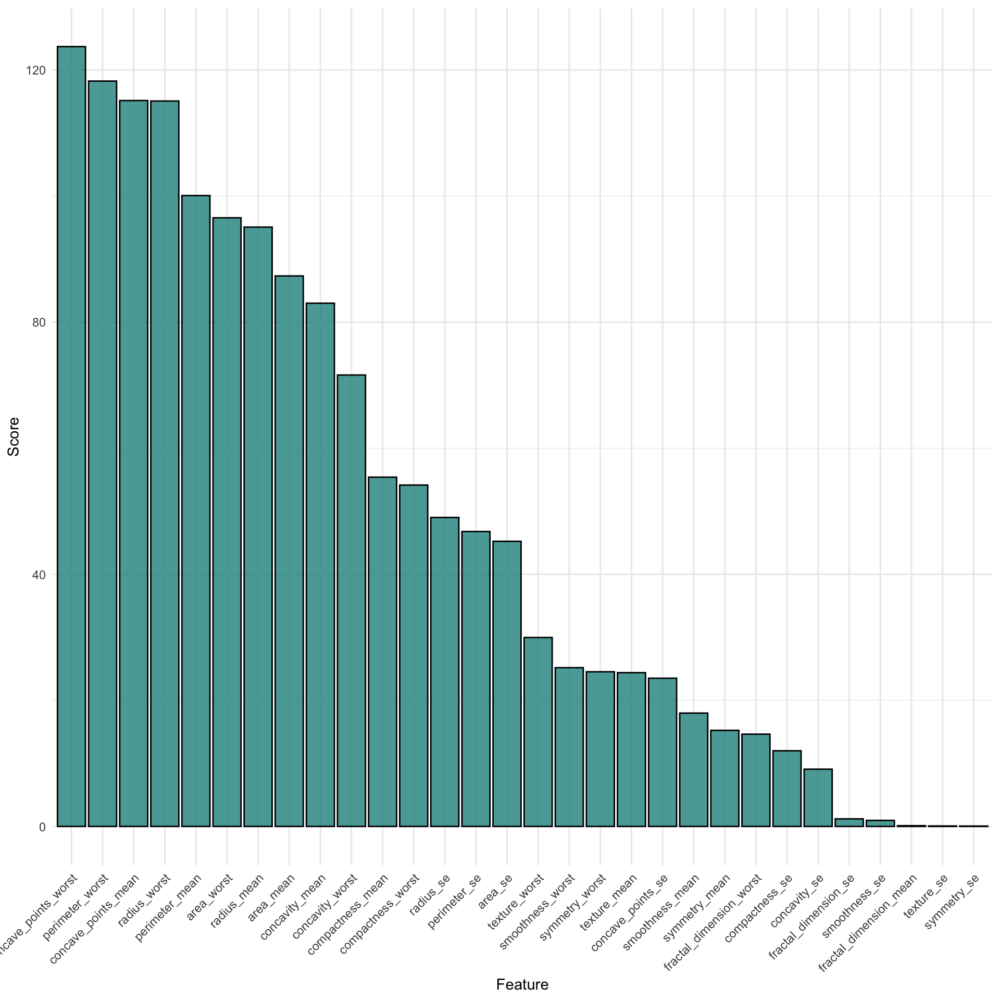
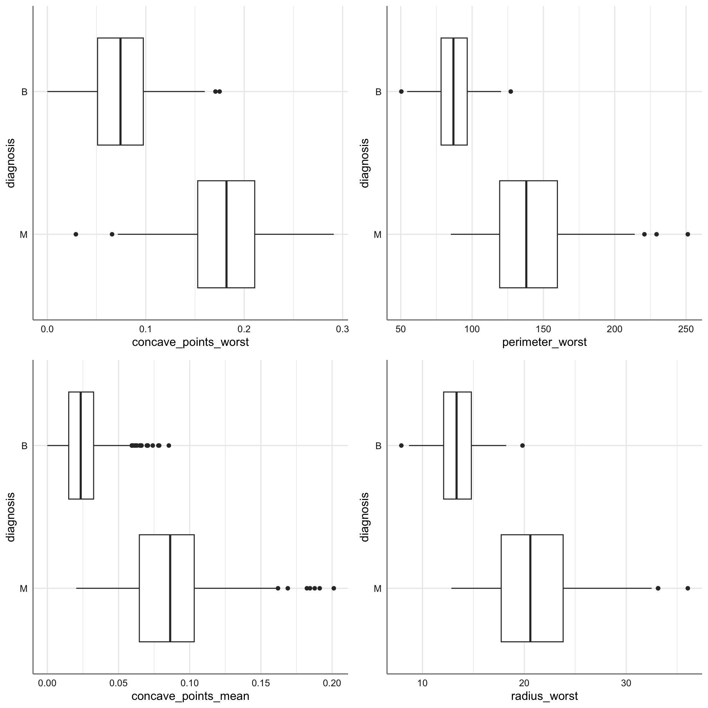
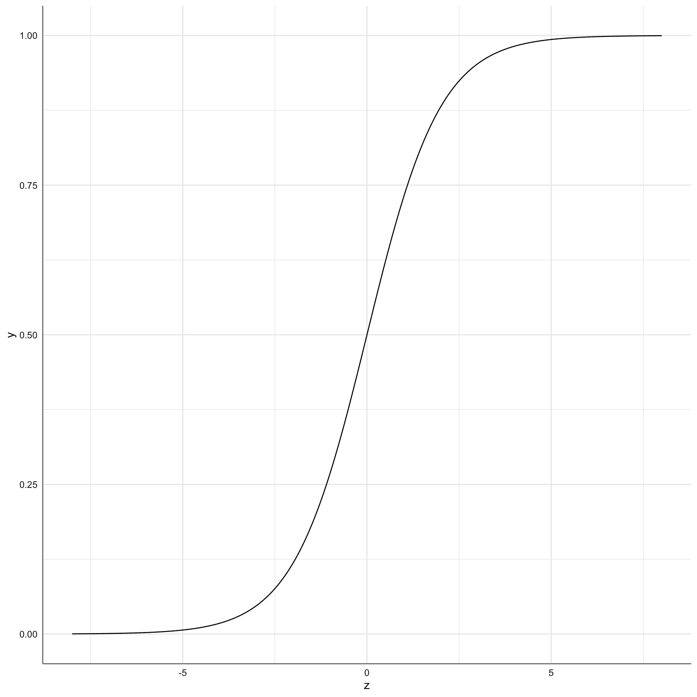
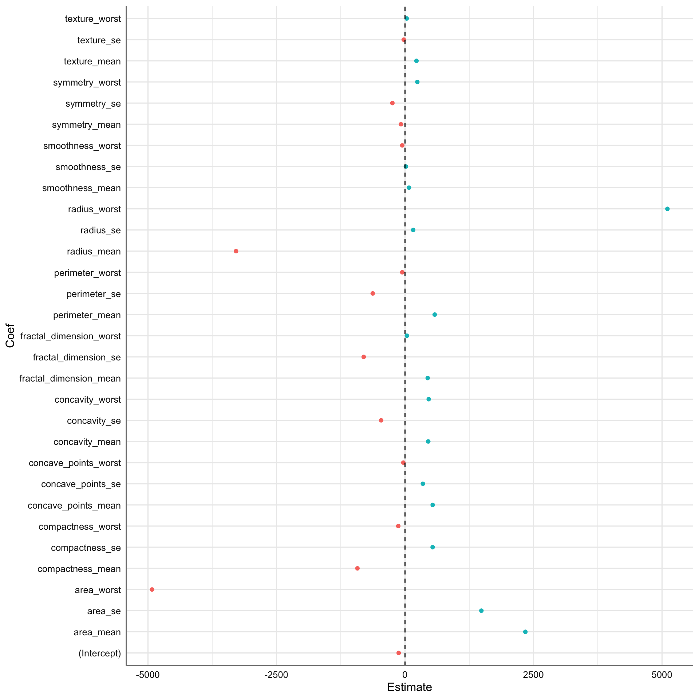
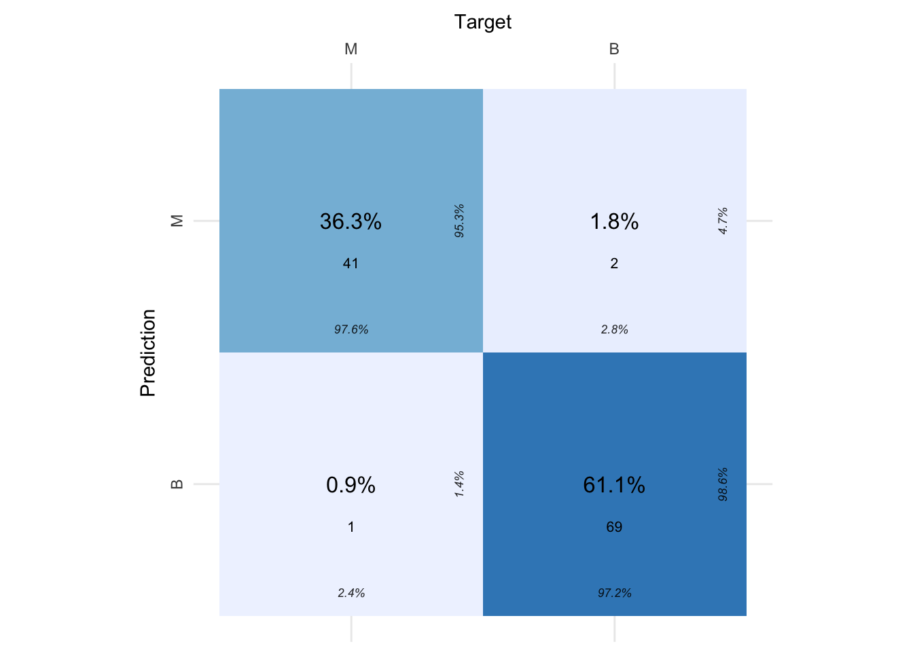
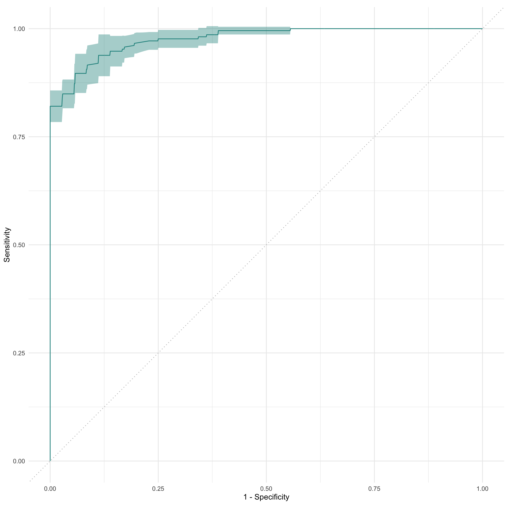
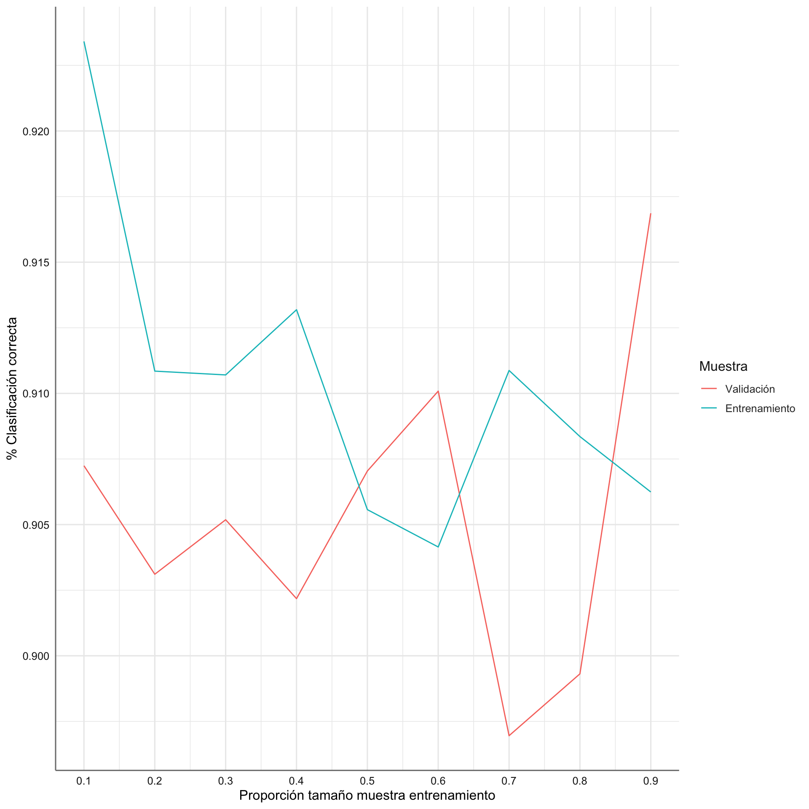
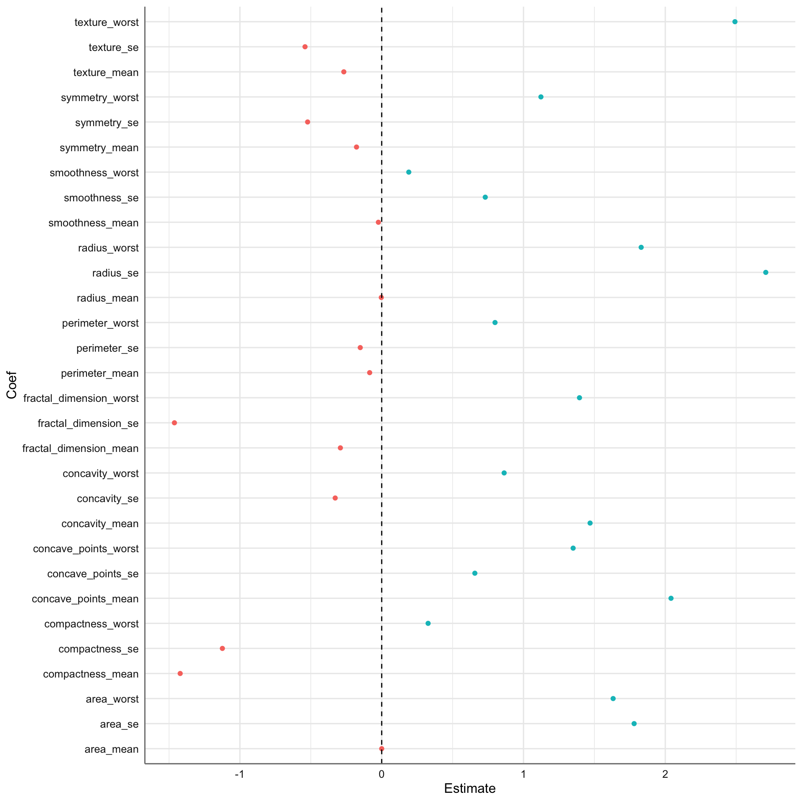
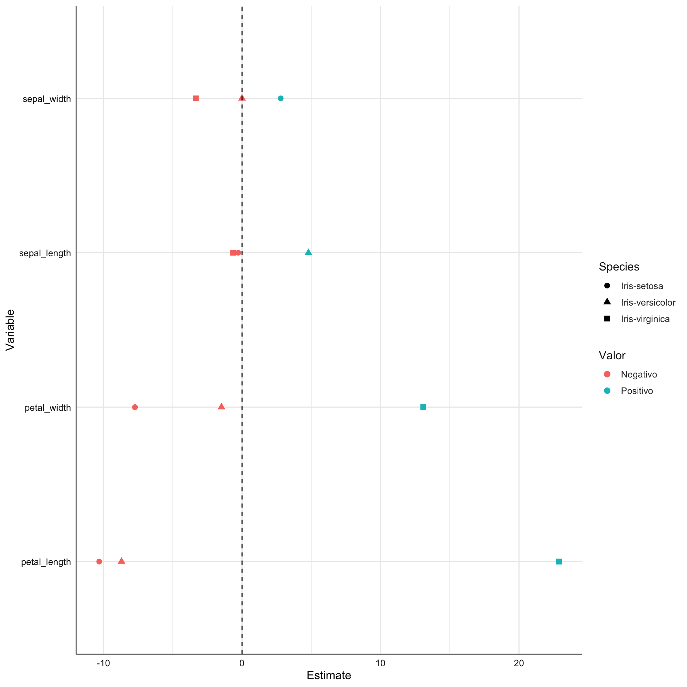

# Paquetes anteriores
library(tidyverse)
library(sjPlot)
library(knitr) # para formatos de tablas
library(skimr)
library(DataExplorer)
library(GGally)
library(gridExtra)
library(ggpubr)
library(cvms)
theme_set(theme_sjplot2())
# Paquetes AA
library(mlr3verse)
library(mlr3tuning)
library(mlr3tuningspaces)7 Modelos de Regresión Logística
Los modelos de regresión logística son aquellos donde el target es de tipo categórico. En función del tipo de categorías del target hablamos de un modelo de regresión logística binario o multinomial.
En los modelos de regresión logística binaria el target que deseamos analizar sólo puede tomar dos valores posibles (0 o 1, Sí y No, Comprar o No comprar, etc…) de forma que el modelo de aprendizaje automático trata de predecir la probabilidad de que una muestra proporcione una respuesta específica entre las dos posibles en función de un conjunto de posibles variables predictoras (de tipo cuantitativo o cualitativo). De forma automática, una vez que determinamos la probabilidad de cada categoría tenemos disponible una herramienta de clasificación de las muestras en cada una de las dos categorías. Se trata pues de un método combinado entre un método de regresión y de clasificación. Dadas las características especiales de este tipo de modelos veremos que las métricas de evaluación utilizadas son las habituales de los modelos de clasificación en lugar de los de regresión.
En los modelos de regresión logística multinomial el target categórico tiene más de dos categorías de respuesta. En estas situaciones no podemos aplicar los modelos de regresión logística binomial, ya que es necesario hacer una clasificación para más de dos clases, y necesitamos una modificación de dicho modelo que se conoce como regresión logística multinomial, o también regresión softmax. En este tipo de regresión la variable respuesta tiene un rango de valores posibles en un conjunto de K clases. El objetivo aquí será determinar cuál es la probabilidad de que el valor de la respuesta sea cada una de las clases potenciales, \(P(y=k|x), k \in K\).
Existen dos variantes para este tipo de modelos:
Regresión logística multinomial con respuesta nominal, es decir, las categorías de la respuesta no siguen ningún orden específico. Por ejemplo el color del pelo de un conjunto de sujetos.
Regresión logística multinomial con respuesta ordinal, es decir, las categorías de la respuesta siguen un orden específico. Por ejemplo el grado de una enfermedad.
En el código siguiente se cargan los paquetes y la configuración básica para este tipo de modelos.
7.1 Bancos de datos
A continuación presentamos los bancos de datos con los que trabajaremos en este tema. En concreto usaremos los bancos de datos Breast Cancer Wisconsin ([-sec-brestcancer]), e Iris (4.3.3) que presentamos en el capítulo 4.
A continuación se muestra el código para la carga de los diferentes bancos de datos y la creación de la correspondiente task de regresión para cada uno de ellos.
Para crear una tarea de clasificación utilizamos la función as_task_classif. En el caso de un target binario debemos identificar además la categoría de mayor interés identificada con el parámetro positive.
7.1.1 Breast Cancer Wisconsin
En esta base de datos se recoge información sobre los cánceres de mama en la ciudad de Wisconsin. Las características de la base de datos se calculan a partir de una imagen digitalizada de un aspiración de aguja fina (FNA) de una masa mamaria. Describen las características de los núcleos celulares presentes en la imagen y el objetivo que se persigue es clasificar un tumor como benigno o maligno en función de las variables predictoras. Como en este caso estamos interesados en saber que predictoras influyen más en el carácter maligno del cáncer, utilizaremos esa categoría como la de interés.
# Cargamos datos
breastcancer = read_rds("breastcancer.rds")
# Creación de task eliminado la columna que identifica os sujetos
tsk_cancer = as_task_classif(breastcancer[,-1], target = "diagnosis", positive = "M")
# información de la tarea
print(tsk_cancer)<TaskClassif:breastcancer[, -1]> (569 x 31)
* Target: diagnosis
* Properties: twoclass
* Features (30):
- dbl (30): area_mean, area_se, area_worst, compactness_mean,
compactness_se, compactness_worst, concave_points_mean,
concave_points_se, concave_points_worst, concavity_mean,
concavity_se, concavity_worst, fractal_dimension_mean,
fractal_dimension_se, fractal_dimension_worst, perimeter_mean,
perimeter_se, perimeter_worst, radius_mean, radius_se,
radius_worst, smoothness_mean, smoothness_se, smoothness_worst,
symmetry_mean, symmetry_se, symmetry_worst, texture_mean,
texture_se, texture_worstTodas la variables son de tipo numérico. En primer lugar evaluamos la existencia de missings
diagnosis area_mean area_se
0 0 0
area_worst compactness_mean compactness_se
0 0 0
compactness_worst concave_points_mean concave_points_se
0 0 0
concave_points_worst concavity_mean concavity_se
0 0 0
concavity_worst fractal_dimension_mean fractal_dimension_se
0 0 0
fractal_dimension_worst perimeter_mean perimeter_se
0 0 0
perimeter_worst radius_mean radius_se
0 0 0
radius_worst smoothness_mean smoothness_se
0 0 0
smoothness_worst symmetry_mean symmetry_se
0 0 0
symmetry_worst texture_mean texture_se
0 0 0
texture_worst
0 No hay valores perdidos en ninguna de las variables el conjunto de datos.
Como el conjunto de predictoras es tan grande no resulta útil representar todos los datos de la tarea en un único gráfico. vamos a utilizar un filtro de las características para determinar a priori las más relevantes, y poder representarlas gráficamente. En este caso utilizamos el filtro anova que nos permite realizar el test F de comparación de medias de las predictoras numéricas con respecto al target categórico.
# Construimos el objeto que define el filtro
filter = flt("anova")
# Aplicamos el filtro sobre los datos de entrenamiento
filter$calculate(tsk_cancer)
# Vemos los resultados
filter<FilterAnova:anova>: ANOVA F-Test
Task Types: classif
Properties: -
Task Properties: -
Packages: stats
Feature types: integer, numeric
feature score
1: concave_points_worst 123.70573229
2: perimeter_worst 118.23871904
3: concave_points_mean 115.14867130
4: radius_worst 115.07148679
5: perimeter_mean 100.07385051
---
26: fractal_dimension_se 1.20015272
27: smoothness_se 0.95743784
28: fractal_dimension_mean 0.11922252
29: texture_se 0.07400141
30: symmetry_se 0.05717782
En la tabla aparecen ordenados las variables con mayores diferencias entre las muestras clasificadas como benignas o malignas. A continuación vemos el gráfico para las cuatro variables más relevantes.
g1 <- ggplot(tsk_cancer$data(), aes(x = concave_points_worst, y= diagnosis)) + geom_boxplot()
g2 <- ggplot(tsk_cancer$data(), aes(x = perimeter_worst, y= diagnosis)) + geom_boxplot()
g3 <- ggplot(tsk_cancer$data(), aes(x = concave_points_mean, y= diagnosis)) + geom_boxplot()
g4 <- ggplot(tsk_cancer$data(), aes(x = radius_worst, y= diagnosis)) + geom_boxplot()
ggarrange(g1, g2, g3, g4, nrow = 2, ncol = 2)
Como se puede ver en los cuatro gráficos hay diferencias entre las cajas correspondientes a cada grupo, indicando que todas ellas pueden ser utilizadas para clasificar el tipo de tumor como benigno o maligno. De hecho en todas ellas se aprecia el mismo efecto. Cuanto mayor es el valor de la predictora más seguros podemos estar de que el cáncer es maligno.
7.1.2 Iris
El banco de datos iris ya los presentamos en temas anteriores y aquí solo se presenta el código para crear la tarea de clasificación correspondiente.
# Cargamos datos
iris = read_rds("iris.rds")
# creamos la tarea
tsk_iris = as_task_classif(iris, target = "species")
# información de la tarea
print(tsk_iris)<TaskClassif:iris> (150 x 5)
* Target: species
* Properties: multiclass
* Features (4):
- dbl (4): petal_length, petal_width, sepal_length, sepal_width7.2 Modelos de Regresión Logística Binaria
A continuación se detallan los aspectos teóricos más importantes de este tipo de modelos.
7.2.1 El modelo
En este tipo de modelos disponemos de una variable respuesta (\(y\)) de tipo cualitativo con dos posibles respuestas que se codifican habitualmente con 0-1, donde el 0 indica “fracaso” y el 1 indica “éxito”. Además disponemos de una matriz de variables predictoras de tipo numérico y/o categórico, a partir de las cuales podemos obtener la matriz \(X\). La definición de “éxito” o “fracaso” depende de cada problema específico.
Imaginemos que disponemos de \(p\) posibles predictoras de forma que el conjunto de muestras viene dado por:
\[\{(y_i, x_{1i},...x_{pi})\}_{i=1}^n \tag{7.1}\]
donde \(x_{ji}\) es el valor de la muestra \(i\) en la predictora \(j\) e \(y_i\) nos da el valor de la categoría de la muestra \(i\) (codificada como 0 o 1). En esta situación construimos el predictor lineal:
\[z = w_0 + w_1X_1+...+w_pX_p \tag{7.2}\]
donde cada \(w_j\) representa la pendiente o variación del predictor lineal con respecto a cada predictora, y \(w_0\) representa el sesgo del modelo. Dado que el valor del predictor lineal no necesariamente se encuentra restringido al intervalo \([0, 1]\), resulta necesario convertir dicho valor en una probabilidad para determinar la solución del modelo. Para realizar esta operación utilizamos la función logística:
\[\phi(z) = \frac{1}{1+e^{-z}}, \tag{7.3}\]
que permite pasar cualquier valor del intervalo \([-∞,∞]\) al intervalo \([0,1]\), es decir, pasamos cualquier valor numérico a una probabilidad. En la figura siguiente podemos ver la representación gráfica de la función logística para diferentes valores de z:
z = seq(-8, 8, 0.001)
y = 1/(1+exp(-z))
res = data.frame(z , y)
ggplot(res, aes(x = z, y = y)) + geom_line()
La función logit se define entonces como:
\[logit(P(y=1 | X) = z, \tag{7.4}\]
donde \(P(y=1 | X)\) es la probabilidad condicional de que una muestra concreta pertenezca a la clase 1 dadas sus predictoras \(X\). La función logit toma entradas en el rango \([0, 1]\) y las transforma en valores en todo el rango de números reales. En cambio, la función logística toma valores de entrada en todo el rango de números reales y los transforma en valores en el rango \([0, 1]\). En otras palabras, la función logística es la inversa de la función logit, y nos permite predecir la probabilidad condicional de que una determinada muestra pertenezca a la clase 1 (o a la clase 0). En realidad a partir de ambas expresiones podemos escribir:
\[P(y=1 | X) = \frac{e^{w_0 + w_1X_1+...+w_pX_p}}{1+e^{w_0 + w_1X_1+...+w_pX_p}} \tag{7.5}\]
y podemos relacionar las probabilidades condicionadas de ambas respuestas mediante el log-odds:
\[log(\frac{P(y=1 | X)}{P(y=0 | X)}) = w_0 + w_1X_1+...+w_pX_p \tag{7.6}\]
que podemos utilizar para representar el ratio entre la probabilidad de evento verdadero y la probabilidad de evento falso (odds ratio):
\[\frac{P(y=1 | X)}{P(y=0 | X)} = exp(w_0 + w_1X_1+...+w_pX_p) \tag{7.7}\]
Los principales elementos que hay que interpretar en un modelo de regresión logística son los siguientes coeficientes de los predictores:
\(w_0\) es la ordenada en el origen o intercept. Se corresponde con el valor esperado del logaritmo de odds cuando todos los predictores son cero.
\(w_p\) son los coeficientes de regresión parcial de cada predictor e indican el cambio promedio del logaritmo de odds al incrementar en una unidad la variable predictora, manteniéndose constantes el resto de variables. Esto equivale a decir que, por cada unidad que se incrementa la predictora, se multiplican los odds por \(e^{w_p}\), es decir, aumenta el riesgo en esa cantidad.
Dado que la relación entre la probabilidad condicional y las predictoras no es lineal, los coeficientes de regresión no se corresponden con el cambio en la probabilidad de la respuesta asociada con el incremento en una unidad de la predictora, sino con el cambio en el log-odds.
7.2.2 Evaluación del modelo
Para la evaluación del modelo se utilizan diferentes métricas obtenidas a partir de la clasificación con las probabilidades proporcionadas por el modelo de regresión logística, entre las que podemos destacar:
- El porcentaje de clasificación correcta/incorrecta.
- La matriz de confusión, que nos permite obtener todos los porcentajes de interés para la clasificación.
- La curva ROC, que se utilizan a menudo para obtener una visión del resultado de un clasificador en términos de sus verdaderos frente a los falsos positivos. Suelen presentar la tasa de verdaderos positivos en el eje Y, y la tasa de falsos positivos en el eje X. Por tanto, la inclinación de la curva y el espacio entre la diagonal y la curva son importantes ya que cuanto más alejada esté la curva y más hacia arriba mejor será nuestro modelo.
- El área bajo la curva (AUC), que nos proporciona el área bajo la curva ROC de forma que valores próximos a 1 indican un buen ajuste (clasificación perfecta), mientras que valores próximos a 0.5 indican un ajuste malo (clasificación incorrecta).
- El score de Brier, que mide la precisión de las predicciones probabilísticas. Para situaciones unidimensionales su comportamiento es igual al del
MSE.
7.2.3 Validación del modelo
Las técnicas de validación para este tipo de modelos son las mismas que las de los modelos de regresión lineal: validación cruzada y curva de aprendizaje.
7.3 Modelos de Regresión Logística Multinomial
A continuación se presentan brevemente los conceptos teóricos más relevantes de los modelos de regresión logística para respuesta multinomial.
7.3.1 El modelo
Imaginemos que disponemos de \(p\) posibles predictoras de forma que el conjunto de muestras viene dado por:
\[\{(y_i, x_{1i},...x_{pi})\}_{i=1}^n\]
donde \(x_{ji}\) es el valor de la muestra \(i\) en la predictora \(j\) e \(y_i\) nos da el valor de la categoría de la muestra \(i\), codificada de 1 a k . En esta situación construimos el predictor lineal para una clase k de la respuesta:
\[z_k = w_{0k} + w_{1k}X_1+...+w_{pk}X_p\]
donde cada \(w_{jk}\) representa la pendiente o variación del predictor lineal con respecto a cada predictora para la clase k, y \(w_{0k}\) representa el sesgo del modelo para la clase k.
La regresión logística multinomial clasifica usando una generalización de la función sigmoide, conocida como la función softmax, para calcular la probabilidad \(P(y=k|x)\). La función softmax toma un vector \(z=[z_1,z_2,…,z_k]'\) de k valores obtenidos a partir de los predictores lineales correspondientes, y los transforma en una distribución de probabilidades.
Para un vector \(z\) de dimensionalidad \(k\) la función softmax se define a partir de los elementos individuales:
\[\phi(z_i) = \frac{e^{z_i}}{\sum_{j=1}^k e^{z_j}}, \quad 1\leq i\leq k\]
como:
\[\phi(z)=\left[\frac{e^{z_1}}{\sum_{j=1}^k e^{z_j}},\frac{e^{z_2}}{\sum_{j=1}^k e^{z_j}},...,\frac{e^{z_k}}{\sum_{j=1}^k e^{z_j}} \right],\]
donde queda claro que todos los elementos están restringidos al intervalo \([0,1]\) y la suma de todas las componentes es 1. Tenemos una distribución de probabilidad para la respuesta en función de las predictoras consideradas.
Como ocurría en el modelo de regresión logística binomial:
\(w_{0k}\) es la ordenada en el origen o intercept. Se corresponde con el valor esperado del logaritmo de odds cuando todos los predictores son cero para la clase k.
\(w_{pk}\) los coeficientes de regresión parcial de cada predictor que indican el cambio promedio del logaritmo de odds al incrementar en una unidad la variable predictora, manteniéndose constantes el resto de variables para una clase dada. Esto equivale a decir que, por cada unidad que se incrementa la predictora, se multiplican los odds por \(e^{w_{pk}}\).
Dado que la relación entre la probabilidad condicional y las predictoras no es lineal, los coeficientes de regresión no se corresponden con el cambio en la probabilidad de la respuesta asociada con el incremento en una unidad de la predictora, sino con el cambio en el log-odds.
Como ocurría en los modelos lineales la magnitud de cada coeficiente parcial de regresión depende de las unidades en las que se mida la variable predictora a la que corresponde, por lo que su magnitud no está asociada con la importancia de cada predictor. Para poder determinar qué impacto tienen en el modelo cada una de las variables, se emplean los coeficientes parciales estandarizados, que se obtienen al estandarizar las predictoras.
7.3.2 Evaluación del modelo
Para la evaluación del modelo se utilizan diferentes métricas obtenidas a partir de la clasificación con las probabilidades proporcionadas por el modelo de regresión logística multinomial, entre las que podemos destacar:
- El porcentaje de clasificación correcta/incorrecta.
- La matriz de confusión, que nos permite obtener todos los porcentajes de interés para la clasificación.
- El score de Brier para clasificaciones múltiples que mide la precisión de las predicciones probabilísticas.
7.4 Regresión logística en mlr3
Para realizar el proceso de aprendizaje de un modelo de regresión logística podemos usar dos learner en la librería mlr3:
classif.log_reg, que esta enfocado en la tarea de clasificación pero que nos permite predecir las probabilidades de cada categoría de la respuesta.classif.multinom, que esta enfocado en la tarea de clasificación cuando hay más de dos categorías en la respuesta. En este caso se fija una categoría como referencia y se obtienen los modelos que proporcionan la probabilidad de clasificación para las otras dos. La probabilidad de la referencia se calcula como 1 menos las otras dos.regr.glm, que esta enfocado en al tarea de regresión para predecir las probabilidades de cada categoría (cuando la respuesta tiene dos o más categorías).
Usar cualquiera de ellos implica que el proceso de evaluación y validación (scores) debe estar adaptado a ellos. Sin embargo, en la práctica ambos algoritmos utilizan la misma función y producen el miso resultado
7.4.1 Datos Breast Cancer
En este caso utilizamos el learner classif.log_reg. Antes de comenzar definimos el preprocesado vinculado a este conjunto de datos (estandarización de predictoras numéricas), y preparamos la muestra de entrenamiento y validación.
Herramienta de preprocesado:
Antes de realizar la división de muestras es necesario saber si el reparto de las categorías maligno-benigno es equitativo en al respuesta. Para ello evaluamos la variable de interés:
Dado que el reparto esta algo desequilibrado vamos a introducir un estrato de agrupación basado en la variable de interés. A continuación consideramos un reparto 80-20.
# Generamos variable de estrato
tsk_cancer$col_roles$stratum <- "diagnosis"
# Fijamos semilla para asegurar la reproducibilidad del modelo
set.seed(135)
# Creamos la partición
splits = mlr3::partition(tsk_cancer, ratio = 0.8)
# Muestras de entrenamiento y validación
tsk_train_cancer = tsk_cancer$clone()$filter(splits$train)
tsk_test_cancer = tsk_cancer$clone()$filter(splits$test)Vemos en primer lugar si el reparto realizado respeta el estrato establecido
diagnosis
M B
170 286 diagnosis
M B
42 71 El ratio entre ambas categorías se mantiene en ambas muestras. Ahora podemos comenzar el proceso de aprendizaje asociado con este modelo.
Podemos comenzar ahora con el entrenamiento del modelo y su interpretación:
# Entrenamiento
gr$train(tsk_train_cancer)
# Resumen del modelo
modelo = gr$model$classif.log_reg$model
summary(modelo)
Call:
stats::glm(formula = task$formula(), family = "binomial", data = data,
model = FALSE)
Coefficients:
Estimate Std. Error z value Pr(>|z|)
(Intercept) -122.67 16932.81 -0.007 0.994
area_mean 2341.84 209910.76 0.011 0.991
area_se 1486.08 69511.26 0.021 0.983
area_worst -4921.17 184349.14 -0.027 0.979
compactness_mean -925.12 34344.47 -0.027 0.979
compactness_se 537.52 22005.83 0.024 0.981
compactness_worst -130.88 34031.57 -0.004 0.997
concave_points_mean 538.98 34397.58 0.016 0.987
concave_points_se 347.88 16817.30 0.021 0.983
concave_points_worst -32.41 29127.43 -0.001 0.999
concavity_mean 452.60 34364.21 0.013 0.989
concavity_se -464.10 21009.29 -0.022 0.982
concavity_worst 461.56 29012.29 0.016 0.987
fractal_dimension_mean 441.67 22878.54 0.019 0.985
fractal_dimension_se -803.44 35348.09 -0.023 0.982
fractal_dimension_worst 36.81 22706.77 0.002 0.999
perimeter_mean 577.41 125345.81 0.005 0.996
perimeter_se -628.13 31167.33 -0.020 0.984
perimeter_worst -53.22 85923.85 -0.001 1.000
radius_mean -3287.17 184474.29 -0.018 0.986
radius_se 158.98 40696.27 0.004 0.997
radius_worst 5105.11 197081.97 0.026 0.979
smoothness_mean 77.36 12740.55 0.006 0.995
smoothness_se 17.27 7127.00 0.002 0.998
smoothness_worst -53.56 13280.63 -0.004 0.997
symmetry_mean -78.23 8201.80 -0.010 0.992
symmetry_se -245.52 10115.26 -0.024 0.981
symmetry_worst 239.48 13681.56 0.018 0.986
texture_mean 223.12 12884.20 0.017 0.986
texture_se -25.41 6898.48 -0.004 0.997
texture_worst 33.00 10877.41 0.003 0.998
(Dispersion parameter for binomial family taken to be 1)
Null deviance: 6.0231e+02 on 455 degrees of freedom
Residual deviance: 2.9881e-06 on 425 degrees of freedom
AIC: 62
Number of Fisher Scoring iterations: 25En el resumen del modelo podemos ver el valor del estadístico AIC (62) y los coeficientes asociados a cada una de las predictoras consideradas. Para su interpretación debemos atender a las siguientes indicaciones:
- los coeficientes negativos reducen la probabilidad de ocurrencia de la categoría de interés (en este caso tumor maligno), mientras que los positivos aumentan la probabilidad de ocurrencia.
- Cuanto mayor es el valor negativo o positivo asociado con el coeficiente mayor es la influencia de la predictora sobre la probabilidad de ocurrencia.
En este caso tenemos coeficientes muy grandes tanto en signo negativo como positivo pero todos ellos resultan no significativos, debido seguramente a un efecto de confusión entre las predictoras. Esto suele ocurrir cuando consideramos un número muy elevado de predictoras y estas están relacionadas entre si. Como veremos más adelante existen diferentes formas de solucionar este problemas entre las que se encuentran: i) trabajar con un número de predictoras reducido, 2) reducir la información contenida en las predictoras mediante un algoritmo de reducción de la dimensión, 3) platear un algoritmo de clasificación distinto, 4) introducir penalización en los coeficientes para obtener un modelo más adecuado. Por el momento, vamos a analizar con más detalle esta solución y dejamos para más adelante cada una de las posibles soluciones.
En el gráfico siguiente podemos apreciar mejor el efecto de las diferentes predictoras sobre la respuesta. Para ello vamos a definir una función que nos permite representar los coeficientes, reutilizando el código del tema anterior.
# Función para representar los coeficientes
plot_coef = function(mod)
{
# mod: modelo utilizado
# Data frame con los coeficientes obtenidos y su codificación) positivo-negativo
coeficientes = na.omit(as.data.frame(mod$coefficients))
coeficientes = rownames_to_column(coeficientes)
colnames(coeficientes) = c("Coef", "Estimate")
coeficientes$Value = ifelse(coeficientes$Estimate > 0, "Positivo", "Negativo")
# Gráfico de coeficientes
ggplot(coeficientes, aes(Estimate, Coef, color = Value)) +
geom_point() +
geom_vline(xintercept = 0, linetype = 2, color = "black") +
theme(legend.position = "none")
}Representamos la solución para nuestro modelo:

Pasamos a evaluar la capacidad predictiva de nuestro modelo a través de diferentes scores como son el porcentaje de clasificación correcto, el score de brier, las curvas ROC y el AUC. En primer lugar obtenemos los valores de la predicción tanto para la muestra de entrenamiento como de validación.
# Predicción de la muestra de entrenamiento y validación
pred_train = gr$predict(tsk_train_cancer)
pred_test = gr$predict(tsk_test_cancer)
# Visualizamos las primeras predicciones de la muestra de validación
pred_test<PredictionClassif> for 113 observations:
row_ids truth response prob.M prob.B
12 M M 1.000000e+00 2.220446e-16
21 B B 2.220446e-16 1.000000e+00
26 M M 1.000000e+00 2.220446e-16
---
550 B B 2.220446e-16 1.000000e+00
565 M M 1.000000e+00 2.220446e-16
567 M M 1.000000e+00 2.220446e-16En la tabla anterior tenemos tanto la respuesta predicha según el modelo, como las probabilidades asociadas a cada una de las categorías. Podemos ver como la categoría que proporciona el modelo está asociada directamente con la probabilidad de ocurrencia de cada nivel del factor.
Evaluamos la capacidad de clasificación del modelo con diferentes scores:
classif.acc(porcentaje de clasificación correcta),classif.bacc(porcentaje de clasificación correcta ponderado para muestras no balanceadas),classif.bbrier(score de Brier para clasificaciones binarias),classif.auc(área bajo la curva ROC).
Comenzamos obteniendo la matriz de confusión para la muestra de validación:
Podemos ver el alto grado de clasificación correcta que proporciona el modelo con solo 3 errores sobre todas las muestras de validación. Representamos gráficamente la matriz de confusión con todos los porcentajes involucrados.
# Cargamos la librería para representar la matriz de confusión
cm = confusion_matrix(pred_test$truth, pred_test$response)
plot_confusion_matrix(cm$`Confusion Matrix`[[1]]) 
Calculamos ahora los scores para ambas muestras.
# scores de validación
measures = msrs(c("classif.acc", "classif.bacc", "classif.bbrier", "classif.auc"))
# Muestra de entrenamiento
pred_train$score(measures) classif.acc classif.bacc classif.bbrier classif.auc
1.000000e+00 1.000000e+00 2.970536e-16 1.000000e+00 classif.acc classif.bacc classif.bbrier classif.auc
0.97345133 0.97401073 0.02654867 0.97401073 Podemos ver que tenemos una clasificación perfecta en la muestra de entrenamiento, lo que puede ser debido a un problema de sobre estimación al considerar todas las predictoras sin eliminar las no relevantes. En cuanto a la muestra de validación tenemos valores similares con una pequeña disminución en el porcentaje de clasificación correcta.
Antes de continuar nos planteamos la posibilidad de seleccionar el conjunto de predictoras que están relacionadas más directamente con la respuesta. Para ello utilizamos un procedimiento de selección de características que identifica el mejor conjunto de ellas con respecto a un score de validación mediante un proceso iterativo. En concreto utilizamos el procedimiento fselect() y utilizamos el selector fs con las opciones sequential y estrategia de búsqueda hacia adelante (sfs). Se pueden consultar todas las opciones en este enlace.
A continuación se muestra el proceso de selección para este conjunto de datos donde utilizamos el porcentaje de clasificación correcta ponderado como criterio de selección. Para la validación utilizamos un objeto de remuestreo con división 80-20. El código se muestra a continuación:
set.seed(145)
instance = fselect(
fselector = fs("sequential", strategy = "sfs"),
task = tsk_cancer,
learner = gr,
resampling = rsmp("holdout", ratio = 0.8),
measure = msr("classif.bacc"),
term_evals = 10
)INFO [17:54:27.911] [bbotk] Starting to optimize 30 parameter(s) with '<FSelectorSequential>' and '<TerminatorEvals> [n_evals=10, k=0]'
INFO [17:54:27.956] [bbotk] Evaluating 30 configuration(s)
INFO [17:54:28.113] [mlr3] Running benchmark with 30 resampling iterations
INFO [17:54:28.170] [mlr3] Applying learner 'scale.classif.log_reg' on task 'breastcancer[, -1]' (iter 1/1)
INFO [17:54:28.318] [mlr3] Applying learner 'scale.classif.log_reg' on task 'breastcancer[, -1]' (iter 1/1)
INFO [17:54:28.541] [mlr3] Applying learner 'scale.classif.log_reg' on task 'breastcancer[, -1]' (iter 1/1)
INFO [17:54:28.675] [mlr3] Applying learner 'scale.classif.log_reg' on task 'breastcancer[, -1]' (iter 1/1)
INFO [17:54:28.818] [mlr3] Applying learner 'scale.classif.log_reg' on task 'breastcancer[, -1]' (iter 1/1)
INFO [17:54:28.982] [mlr3] Applying learner 'scale.classif.log_reg' on task 'breastcancer[, -1]' (iter 1/1)
INFO [17:54:29.132] [mlr3] Applying learner 'scale.classif.log_reg' on task 'breastcancer[, -1]' (iter 1/1)
INFO [17:54:29.269] [mlr3] Applying learner 'scale.classif.log_reg' on task 'breastcancer[, -1]' (iter 1/1)
INFO [17:54:29.387] [mlr3] Applying learner 'scale.classif.log_reg' on task 'breastcancer[, -1]' (iter 1/1)
INFO [17:54:29.526] [mlr3] Applying learner 'scale.classif.log_reg' on task 'breastcancer[, -1]' (iter 1/1)
INFO [17:54:29.647] [mlr3] Applying learner 'scale.classif.log_reg' on task 'breastcancer[, -1]' (iter 1/1)
INFO [17:54:29.766] [mlr3] Applying learner 'scale.classif.log_reg' on task 'breastcancer[, -1]' (iter 1/1)
INFO [17:54:29.897] [mlr3] Applying learner 'scale.classif.log_reg' on task 'breastcancer[, -1]' (iter 1/1)
INFO [17:54:30.063] [mlr3] Applying learner 'scale.classif.log_reg' on task 'breastcancer[, -1]' (iter 1/1)
INFO [17:54:30.209] [mlr3] Applying learner 'scale.classif.log_reg' on task 'breastcancer[, -1]' (iter 1/1)
INFO [17:54:30.339] [mlr3] Applying learner 'scale.classif.log_reg' on task 'breastcancer[, -1]' (iter 1/1)
INFO [17:54:30.495] [mlr3] Applying learner 'scale.classif.log_reg' on task 'breastcancer[, -1]' (iter 1/1)
INFO [17:54:30.629] [mlr3] Applying learner 'scale.classif.log_reg' on task 'breastcancer[, -1]' (iter 1/1)
INFO [17:54:30.762] [mlr3] Applying learner 'scale.classif.log_reg' on task 'breastcancer[, -1]' (iter 1/1)
INFO [17:54:30.906] [mlr3] Applying learner 'scale.classif.log_reg' on task 'breastcancer[, -1]' (iter 1/1)
INFO [17:54:31.060] [mlr3] Applying learner 'scale.classif.log_reg' on task 'breastcancer[, -1]' (iter 1/1)
INFO [17:54:31.201] [mlr3] Applying learner 'scale.classif.log_reg' on task 'breastcancer[, -1]' (iter 1/1)
INFO [17:54:31.330] [mlr3] Applying learner 'scale.classif.log_reg' on task 'breastcancer[, -1]' (iter 1/1)
INFO [17:54:31.471] [mlr3] Applying learner 'scale.classif.log_reg' on task 'breastcancer[, -1]' (iter 1/1)
INFO [17:54:31.598] [mlr3] Applying learner 'scale.classif.log_reg' on task 'breastcancer[, -1]' (iter 1/1)
INFO [17:54:31.725] [mlr3] Applying learner 'scale.classif.log_reg' on task 'breastcancer[, -1]' (iter 1/1)
INFO [17:54:31.882] [mlr3] Applying learner 'scale.classif.log_reg' on task 'breastcancer[, -1]' (iter 1/1)
INFO [17:54:32.011] [mlr3] Applying learner 'scale.classif.log_reg' on task 'breastcancer[, -1]' (iter 1/1)
INFO [17:54:32.144] [mlr3] Applying learner 'scale.classif.log_reg' on task 'breastcancer[, -1]' (iter 1/1)
INFO [17:54:32.260] [mlr3] Applying learner 'scale.classif.log_reg' on task 'breastcancer[, -1]' (iter 1/1)
INFO [17:54:32.396] [mlr3] Finished benchmark
INFO [17:54:32.780] [bbotk] Result of batch 1:
INFO [17:54:32.786] [bbotk] area_mean area_se area_worst compactness_mean compactness_se compactness_worst
INFO [17:54:32.786] [bbotk] TRUE FALSE FALSE FALSE FALSE FALSE
INFO [17:54:32.786] [bbotk] FALSE TRUE FALSE FALSE FALSE FALSE
INFO [17:54:32.786] [bbotk] FALSE FALSE TRUE FALSE FALSE FALSE
INFO [17:54:32.786] [bbotk] FALSE FALSE FALSE TRUE FALSE FALSE
INFO [17:54:32.786] [bbotk] FALSE FALSE FALSE FALSE TRUE FALSE
INFO [17:54:32.786] [bbotk] FALSE FALSE FALSE FALSE FALSE TRUE
INFO [17:54:32.786] [bbotk] FALSE FALSE FALSE FALSE FALSE FALSE
INFO [17:54:32.786] [bbotk] FALSE FALSE FALSE FALSE FALSE FALSE
INFO [17:54:32.786] [bbotk] FALSE FALSE FALSE FALSE FALSE FALSE
INFO [17:54:32.786] [bbotk] FALSE FALSE FALSE FALSE FALSE FALSE
INFO [17:54:32.786] [bbotk] FALSE FALSE FALSE FALSE FALSE FALSE
INFO [17:54:32.786] [bbotk] FALSE FALSE FALSE FALSE FALSE FALSE
INFO [17:54:32.786] [bbotk] FALSE FALSE FALSE FALSE FALSE FALSE
INFO [17:54:32.786] [bbotk] FALSE FALSE FALSE FALSE FALSE FALSE
INFO [17:54:32.786] [bbotk] FALSE FALSE FALSE FALSE FALSE FALSE
INFO [17:54:32.786] [bbotk] FALSE FALSE FALSE FALSE FALSE FALSE
INFO [17:54:32.786] [bbotk] FALSE FALSE FALSE FALSE FALSE FALSE
INFO [17:54:32.786] [bbotk] FALSE FALSE FALSE FALSE FALSE FALSE
INFO [17:54:32.786] [bbotk] FALSE FALSE FALSE FALSE FALSE FALSE
INFO [17:54:32.786] [bbotk] FALSE FALSE FALSE FALSE FALSE FALSE
INFO [17:54:32.786] [bbotk] FALSE FALSE FALSE FALSE FALSE FALSE
INFO [17:54:32.786] [bbotk] FALSE FALSE FALSE FALSE FALSE FALSE
INFO [17:54:32.786] [bbotk] FALSE FALSE FALSE FALSE FALSE FALSE
INFO [17:54:32.786] [bbotk] FALSE FALSE FALSE FALSE FALSE FALSE
INFO [17:54:32.786] [bbotk] FALSE FALSE FALSE FALSE FALSE FALSE
INFO [17:54:32.786] [bbotk] FALSE FALSE FALSE FALSE FALSE FALSE
INFO [17:54:32.786] [bbotk] FALSE FALSE FALSE FALSE FALSE FALSE
INFO [17:54:32.786] [bbotk] FALSE FALSE FALSE FALSE FALSE FALSE
INFO [17:54:32.786] [bbotk] FALSE FALSE FALSE FALSE FALSE FALSE
INFO [17:54:32.786] [bbotk] FALSE FALSE FALSE FALSE FALSE FALSE
INFO [17:54:32.786] [bbotk] area_mean area_se area_worst compactness_mean compactness_se compactness_worst
INFO [17:54:32.786] [bbotk] concave_points_mean concave_points_se concave_points_worst concavity_mean
INFO [17:54:32.786] [bbotk] FALSE FALSE FALSE FALSE
INFO [17:54:32.786] [bbotk] FALSE FALSE FALSE FALSE
INFO [17:54:32.786] [bbotk] FALSE FALSE FALSE FALSE
INFO [17:54:32.786] [bbotk] FALSE FALSE FALSE FALSE
INFO [17:54:32.786] [bbotk] FALSE FALSE FALSE FALSE
INFO [17:54:32.786] [bbotk] FALSE FALSE FALSE FALSE
INFO [17:54:32.786] [bbotk] TRUE FALSE FALSE FALSE
INFO [17:54:32.786] [bbotk] FALSE TRUE FALSE FALSE
INFO [17:54:32.786] [bbotk] FALSE FALSE TRUE FALSE
INFO [17:54:32.786] [bbotk] FALSE FALSE FALSE TRUE
INFO [17:54:32.786] [bbotk] FALSE FALSE FALSE FALSE
INFO [17:54:32.786] [bbotk] FALSE FALSE FALSE FALSE
INFO [17:54:32.786] [bbotk] FALSE FALSE FALSE FALSE
INFO [17:54:32.786] [bbotk] FALSE FALSE FALSE FALSE
INFO [17:54:32.786] [bbotk] FALSE FALSE FALSE FALSE
INFO [17:54:32.786] [bbotk] FALSE FALSE FALSE FALSE
INFO [17:54:32.786] [bbotk] FALSE FALSE FALSE FALSE
INFO [17:54:32.786] [bbotk] FALSE FALSE FALSE FALSE
INFO [17:54:32.786] [bbotk] FALSE FALSE FALSE FALSE
INFO [17:54:32.786] [bbotk] FALSE FALSE FALSE FALSE
INFO [17:54:32.786] [bbotk] FALSE FALSE FALSE FALSE
INFO [17:54:32.786] [bbotk] FALSE FALSE FALSE FALSE
INFO [17:54:32.786] [bbotk] FALSE FALSE FALSE FALSE
INFO [17:54:32.786] [bbotk] FALSE FALSE FALSE FALSE
INFO [17:54:32.786] [bbotk] FALSE FALSE FALSE FALSE
INFO [17:54:32.786] [bbotk] FALSE FALSE FALSE FALSE
INFO [17:54:32.786] [bbotk] FALSE FALSE FALSE FALSE
INFO [17:54:32.786] [bbotk] FALSE FALSE FALSE FALSE
INFO [17:54:32.786] [bbotk] FALSE FALSE FALSE FALSE
INFO [17:54:32.786] [bbotk] FALSE FALSE FALSE FALSE
INFO [17:54:32.786] [bbotk] concave_points_mean concave_points_se concave_points_worst concavity_mean
INFO [17:54:32.786] [bbotk] concavity_se concavity_worst fractal_dimension_mean fractal_dimension_se
INFO [17:54:32.786] [bbotk] FALSE FALSE FALSE FALSE
INFO [17:54:32.786] [bbotk] FALSE FALSE FALSE FALSE
INFO [17:54:32.786] [bbotk] FALSE FALSE FALSE FALSE
INFO [17:54:32.786] [bbotk] FALSE FALSE FALSE FALSE
INFO [17:54:32.786] [bbotk] FALSE FALSE FALSE FALSE
INFO [17:54:32.786] [bbotk] FALSE FALSE FALSE FALSE
INFO [17:54:32.786] [bbotk] FALSE FALSE FALSE FALSE
INFO [17:54:32.786] [bbotk] FALSE FALSE FALSE FALSE
INFO [17:54:32.786] [bbotk] FALSE FALSE FALSE FALSE
INFO [17:54:32.786] [bbotk] FALSE FALSE FALSE FALSE
INFO [17:54:32.786] [bbotk] TRUE FALSE FALSE FALSE
INFO [17:54:32.786] [bbotk] FALSE TRUE FALSE FALSE
INFO [17:54:32.786] [bbotk] FALSE FALSE TRUE FALSE
INFO [17:54:32.786] [bbotk] FALSE FALSE FALSE TRUE
INFO [17:54:32.786] [bbotk] FALSE FALSE FALSE FALSE
INFO [17:54:32.786] [bbotk] FALSE FALSE FALSE FALSE
INFO [17:54:32.786] [bbotk] FALSE FALSE FALSE FALSE
INFO [17:54:32.786] [bbotk] FALSE FALSE FALSE FALSE
INFO [17:54:32.786] [bbotk] FALSE FALSE FALSE FALSE
INFO [17:54:32.786] [bbotk] FALSE FALSE FALSE FALSE
INFO [17:54:32.786] [bbotk] FALSE FALSE FALSE FALSE
INFO [17:54:32.786] [bbotk] FALSE FALSE FALSE FALSE
INFO [17:54:32.786] [bbotk] FALSE FALSE FALSE FALSE
INFO [17:54:32.786] [bbotk] FALSE FALSE FALSE FALSE
INFO [17:54:32.786] [bbotk] FALSE FALSE FALSE FALSE
INFO [17:54:32.786] [bbotk] FALSE FALSE FALSE FALSE
INFO [17:54:32.786] [bbotk] FALSE FALSE FALSE FALSE
INFO [17:54:32.786] [bbotk] FALSE FALSE FALSE FALSE
INFO [17:54:32.786] [bbotk] FALSE FALSE FALSE FALSE
INFO [17:54:32.786] [bbotk] FALSE FALSE FALSE FALSE
INFO [17:54:32.786] [bbotk] concavity_se concavity_worst fractal_dimension_mean fractal_dimension_se
INFO [17:54:32.786] [bbotk] fractal_dimension_worst perimeter_mean perimeter_se perimeter_worst
INFO [17:54:32.786] [bbotk] FALSE FALSE FALSE FALSE
INFO [17:54:32.786] [bbotk] FALSE FALSE FALSE FALSE
INFO [17:54:32.786] [bbotk] FALSE FALSE FALSE FALSE
INFO [17:54:32.786] [bbotk] FALSE FALSE FALSE FALSE
INFO [17:54:32.786] [bbotk] FALSE FALSE FALSE FALSE
INFO [17:54:32.786] [bbotk] FALSE FALSE FALSE FALSE
INFO [17:54:32.786] [bbotk] FALSE FALSE FALSE FALSE
INFO [17:54:32.786] [bbotk] FALSE FALSE FALSE FALSE
INFO [17:54:32.786] [bbotk] FALSE FALSE FALSE FALSE
INFO [17:54:32.786] [bbotk] FALSE FALSE FALSE FALSE
INFO [17:54:32.786] [bbotk] FALSE FALSE FALSE FALSE
INFO [17:54:32.786] [bbotk] FALSE FALSE FALSE FALSE
INFO [17:54:32.786] [bbotk] FALSE FALSE FALSE FALSE
INFO [17:54:32.786] [bbotk] FALSE FALSE FALSE FALSE
INFO [17:54:32.786] [bbotk] TRUE FALSE FALSE FALSE
INFO [17:54:32.786] [bbotk] FALSE TRUE FALSE FALSE
INFO [17:54:32.786] [bbotk] FALSE FALSE TRUE FALSE
INFO [17:54:32.786] [bbotk] FALSE FALSE FALSE TRUE
INFO [17:54:32.786] [bbotk] FALSE FALSE FALSE FALSE
INFO [17:54:32.786] [bbotk] FALSE FALSE FALSE FALSE
INFO [17:54:32.786] [bbotk] FALSE FALSE FALSE FALSE
INFO [17:54:32.786] [bbotk] FALSE FALSE FALSE FALSE
INFO [17:54:32.786] [bbotk] FALSE FALSE FALSE FALSE
INFO [17:54:32.786] [bbotk] FALSE FALSE FALSE FALSE
INFO [17:54:32.786] [bbotk] FALSE FALSE FALSE FALSE
INFO [17:54:32.786] [bbotk] FALSE FALSE FALSE FALSE
INFO [17:54:32.786] [bbotk] FALSE FALSE FALSE FALSE
INFO [17:54:32.786] [bbotk] FALSE FALSE FALSE FALSE
INFO [17:54:32.786] [bbotk] FALSE FALSE FALSE FALSE
INFO [17:54:32.786] [bbotk] FALSE FALSE FALSE FALSE
INFO [17:54:32.786] [bbotk] fractal_dimension_worst perimeter_mean perimeter_se perimeter_worst
INFO [17:54:32.786] [bbotk] radius_mean radius_se radius_worst smoothness_mean smoothness_se
INFO [17:54:32.786] [bbotk] FALSE FALSE FALSE FALSE FALSE
INFO [17:54:32.786] [bbotk] FALSE FALSE FALSE FALSE FALSE
INFO [17:54:32.786] [bbotk] FALSE FALSE FALSE FALSE FALSE
INFO [17:54:32.786] [bbotk] FALSE FALSE FALSE FALSE FALSE
INFO [17:54:32.786] [bbotk] FALSE FALSE FALSE FALSE FALSE
INFO [17:54:32.786] [bbotk] FALSE FALSE FALSE FALSE FALSE
INFO [17:54:32.786] [bbotk] FALSE FALSE FALSE FALSE FALSE
INFO [17:54:32.786] [bbotk] FALSE FALSE FALSE FALSE FALSE
INFO [17:54:32.786] [bbotk] FALSE FALSE FALSE FALSE FALSE
INFO [17:54:32.786] [bbotk] FALSE FALSE FALSE FALSE FALSE
INFO [17:54:32.786] [bbotk] FALSE FALSE FALSE FALSE FALSE
INFO [17:54:32.786] [bbotk] FALSE FALSE FALSE FALSE FALSE
INFO [17:54:32.786] [bbotk] FALSE FALSE FALSE FALSE FALSE
INFO [17:54:32.786] [bbotk] FALSE FALSE FALSE FALSE FALSE
INFO [17:54:32.786] [bbotk] FALSE FALSE FALSE FALSE FALSE
INFO [17:54:32.786] [bbotk] FALSE FALSE FALSE FALSE FALSE
INFO [17:54:32.786] [bbotk] FALSE FALSE FALSE FALSE FALSE
INFO [17:54:32.786] [bbotk] FALSE FALSE FALSE FALSE FALSE
INFO [17:54:32.786] [bbotk] TRUE FALSE FALSE FALSE FALSE
INFO [17:54:32.786] [bbotk] FALSE TRUE FALSE FALSE FALSE
INFO [17:54:32.786] [bbotk] FALSE FALSE TRUE FALSE FALSE
INFO [17:54:32.786] [bbotk] FALSE FALSE FALSE TRUE FALSE
INFO [17:54:32.786] [bbotk] FALSE FALSE FALSE FALSE TRUE
INFO [17:54:32.786] [bbotk] FALSE FALSE FALSE FALSE FALSE
INFO [17:54:32.786] [bbotk] FALSE FALSE FALSE FALSE FALSE
INFO [17:54:32.786] [bbotk] FALSE FALSE FALSE FALSE FALSE
INFO [17:54:32.786] [bbotk] FALSE FALSE FALSE FALSE FALSE
INFO [17:54:32.786] [bbotk] FALSE FALSE FALSE FALSE FALSE
INFO [17:54:32.786] [bbotk] FALSE FALSE FALSE FALSE FALSE
INFO [17:54:32.786] [bbotk] FALSE FALSE FALSE FALSE FALSE
INFO [17:54:32.786] [bbotk] radius_mean radius_se radius_worst smoothness_mean smoothness_se
INFO [17:54:32.786] [bbotk] smoothness_worst symmetry_mean symmetry_se symmetry_worst texture_mean
INFO [17:54:32.786] [bbotk] FALSE FALSE FALSE FALSE FALSE
INFO [17:54:32.786] [bbotk] FALSE FALSE FALSE FALSE FALSE
INFO [17:54:32.786] [bbotk] FALSE FALSE FALSE FALSE FALSE
INFO [17:54:32.786] [bbotk] FALSE FALSE FALSE FALSE FALSE
INFO [17:54:32.786] [bbotk] FALSE FALSE FALSE FALSE FALSE
INFO [17:54:32.786] [bbotk] FALSE FALSE FALSE FALSE FALSE
INFO [17:54:32.786] [bbotk] FALSE FALSE FALSE FALSE FALSE
INFO [17:54:32.786] [bbotk] FALSE FALSE FALSE FALSE FALSE
INFO [17:54:32.786] [bbotk] FALSE FALSE FALSE FALSE FALSE
INFO [17:54:32.786] [bbotk] FALSE FALSE FALSE FALSE FALSE
INFO [17:54:32.786] [bbotk] FALSE FALSE FALSE FALSE FALSE
INFO [17:54:32.786] [bbotk] FALSE FALSE FALSE FALSE FALSE
INFO [17:54:32.786] [bbotk] FALSE FALSE FALSE FALSE FALSE
INFO [17:54:32.786] [bbotk] FALSE FALSE FALSE FALSE FALSE
INFO [17:54:32.786] [bbotk] FALSE FALSE FALSE FALSE FALSE
INFO [17:54:32.786] [bbotk] FALSE FALSE FALSE FALSE FALSE
INFO [17:54:32.786] [bbotk] FALSE FALSE FALSE FALSE FALSE
INFO [17:54:32.786] [bbotk] FALSE FALSE FALSE FALSE FALSE
INFO [17:54:32.786] [bbotk] FALSE FALSE FALSE FALSE FALSE
INFO [17:54:32.786] [bbotk] FALSE FALSE FALSE FALSE FALSE
INFO [17:54:32.786] [bbotk] FALSE FALSE FALSE FALSE FALSE
INFO [17:54:32.786] [bbotk] FALSE FALSE FALSE FALSE FALSE
INFO [17:54:32.786] [bbotk] FALSE FALSE FALSE FALSE FALSE
INFO [17:54:32.786] [bbotk] TRUE FALSE FALSE FALSE FALSE
INFO [17:54:32.786] [bbotk] FALSE TRUE FALSE FALSE FALSE
INFO [17:54:32.786] [bbotk] FALSE FALSE TRUE FALSE FALSE
INFO [17:54:32.786] [bbotk] FALSE FALSE FALSE TRUE FALSE
INFO [17:54:32.786] [bbotk] FALSE FALSE FALSE FALSE TRUE
INFO [17:54:32.786] [bbotk] FALSE FALSE FALSE FALSE FALSE
INFO [17:54:32.786] [bbotk] FALSE FALSE FALSE FALSE FALSE
INFO [17:54:32.786] [bbotk] smoothness_worst symmetry_mean symmetry_se symmetry_worst texture_mean
INFO [17:54:32.786] [bbotk] texture_se texture_worst classif.bacc warnings errors runtime_learners
INFO [17:54:32.786] [bbotk] FALSE FALSE 0.9453387 0 0 0.135
INFO [17:54:32.786] [bbotk] FALSE FALSE 0.9502012 0 0 0.205
INFO [17:54:32.786] [bbotk] FALSE FALSE 0.9572435 0 0 0.120
INFO [17:54:32.786] [bbotk] FALSE FALSE 0.8246144 0 0 0.128
INFO [17:54:32.786] [bbotk] FALSE FALSE 0.5432596 0 0 0.146
INFO [17:54:32.786] [bbotk] FALSE FALSE 0.8527834 0 0 0.134
INFO [17:54:32.786] [bbotk] FALSE FALSE 0.9220322 0 0 0.112
INFO [17:54:32.786] [bbotk] FALSE FALSE 0.6130114 0 0 0.105
INFO [17:54:32.786] [bbotk] FALSE FALSE 0.9101274 0 0 0.126
INFO [17:54:32.786] [bbotk] FALSE FALSE 0.8933602 0 0 0.108
INFO [17:54:32.786] [bbotk] FALSE FALSE 0.5362173 0 0 0.107
INFO [17:54:32.786] [bbotk] FALSE FALSE 0.8884977 0 0 0.119
INFO [17:54:32.786] [bbotk] FALSE FALSE 0.5000000 0 0 0.151
INFO [17:54:32.786] [bbotk] FALSE FALSE 0.5000000 0 0 0.121
INFO [17:54:32.786] [bbotk] FALSE FALSE 0.6292757 0 0 0.115
INFO [17:54:32.786] [bbotk] FALSE FALSE 0.9263917 0 0 0.142
INFO [17:54:32.786] [bbotk] FALSE FALSE 0.8673709 0 0 0.119
INFO [17:54:32.786] [bbotk] FALSE FALSE 0.9691482 0 0 0.117
INFO [17:54:32.786] [bbotk] FALSE FALSE 0.9263917 0 0 0.131
INFO [17:54:32.786] [bbotk] FALSE FALSE 0.8765929 0 0 0.139
INFO [17:54:32.786] [bbotk] FALSE FALSE 0.9572435 0 0 0.129
INFO [17:54:32.786] [bbotk] FALSE FALSE 0.6562710 0 0 0.115
INFO [17:54:32.786] [bbotk] FALSE FALSE 0.5000000 0 0 0.128
INFO [17:54:32.786] [bbotk] FALSE FALSE 0.6514085 0 0 0.113
INFO [17:54:32.786] [bbotk] FALSE FALSE 0.6839370 0 0 0.113
INFO [17:54:32.786] [bbotk] FALSE FALSE 0.5000000 0 0 0.142
INFO [17:54:32.786] [bbotk] FALSE FALSE 0.7174715 0 0 0.116
INFO [17:54:32.786] [bbotk] FALSE FALSE 0.6265929 0 0 0.121
INFO [17:54:32.786] [bbotk] TRUE FALSE 0.5000000 0 0 0.103
INFO [17:54:32.786] [bbotk] FALSE TRUE 0.7147887 0 0 0.115
INFO [17:54:32.786] [bbotk] texture_se texture_worst classif.bacc warnings errors runtime_learners
INFO [17:54:32.786] [bbotk] uhash
INFO [17:54:32.786] [bbotk] 35ab26fd-e9b1-47f5-ab32-6a8d756ee4cb
INFO [17:54:32.786] [bbotk] f35c71ce-8eaa-4037-8886-99a3e7234305
INFO [17:54:32.786] [bbotk] f9fb4ca1-a8d7-4fe9-8e2b-6da1fa6f2f84
INFO [17:54:32.786] [bbotk] aab9ae2f-3693-47be-a07e-c9b6823ac0bb
INFO [17:54:32.786] [bbotk] 9c5f719a-5f04-46d3-8334-8b72fdc3f2b7
INFO [17:54:32.786] [bbotk] 65ca9aaa-7236-41ab-8bb9-941b3a12fb74
INFO [17:54:32.786] [bbotk] 072ed682-2fb2-4eea-9f13-8d45a67d2391
INFO [17:54:32.786] [bbotk] b2aec738-649f-4f60-9c8a-9db15eb488b6
INFO [17:54:32.786] [bbotk] 644e3a7f-b1c9-4477-bb1b-8f0345d1d02e
INFO [17:54:32.786] [bbotk] f8b9efb2-7dc3-42d7-9c5d-7f0a24ed1e87
INFO [17:54:32.786] [bbotk] f016bf16-e6d1-4b92-88ec-a8c879ae90d5
INFO [17:54:32.786] [bbotk] 773b1639-59f8-4fb4-bd08-261b30dd81b0
INFO [17:54:32.786] [bbotk] c8cd53d6-9719-4ba5-b285-855aee7bfc18
INFO [17:54:32.786] [bbotk] 12b0041a-346b-4d8a-a304-a134bf66d774
INFO [17:54:32.786] [bbotk] caf36a16-8d2d-4ac4-8065-580bc4986a28
INFO [17:54:32.786] [bbotk] 4aae4d57-d3bb-45f1-8031-80ce58ab0254
INFO [17:54:32.786] [bbotk] 8f1ab785-fc39-45ec-bc60-1ced01008fe2
INFO [17:54:32.786] [bbotk] cf2bcddb-a342-4dc3-8903-9efe321679dd
INFO [17:54:32.786] [bbotk] 8f04cc21-1ccf-4046-a972-a64428040aa8
INFO [17:54:32.786] [bbotk] 3f802c65-8c74-496b-b9bc-b24f9beb23de
INFO [17:54:32.786] [bbotk] 15dabc6e-4ffd-41d9-a551-2fe4913928cc
INFO [17:54:32.786] [bbotk] e3cb6b1b-7dd9-4c9e-bd8a-db3dbbbbf1d9
INFO [17:54:32.786] [bbotk] d03c132c-a9ed-4b59-8d72-de5cc67ceb64
INFO [17:54:32.786] [bbotk] 32257951-15b1-4a11-bf60-46a01ec822e7
INFO [17:54:32.786] [bbotk] 48726633-4529-4ff4-928e-1c0e84657158
INFO [17:54:32.786] [bbotk] e1ed5ece-c65b-46db-a737-ffd2cacce2bf
INFO [17:54:32.786] [bbotk] 3a877730-db6b-4639-9d0b-2fa5b7546d0e
INFO [17:54:32.786] [bbotk] b6c48f51-4708-41ee-a684-18f171274757
INFO [17:54:32.786] [bbotk] afa35c02-e63b-4083-8134-2dabde09f78d
INFO [17:54:32.786] [bbotk] 83729b8f-3ef2-4d21-9bfd-62468bc15d5f
INFO [17:54:32.786] [bbotk] uhash
INFO [17:54:32.795] [bbotk] Finished optimizing after 30 evaluation(s)
INFO [17:54:32.796] [bbotk] Result:
INFO [17:54:32.798] [bbotk] area_mean area_se area_worst compactness_mean compactness_se compactness_worst
INFO [17:54:32.798] [bbotk] FALSE FALSE FALSE FALSE FALSE FALSE
INFO [17:54:32.798] [bbotk] concave_points_mean concave_points_se concave_points_worst concavity_mean
INFO [17:54:32.798] [bbotk] FALSE FALSE FALSE FALSE
INFO [17:54:32.798] [bbotk] concavity_se concavity_worst fractal_dimension_mean fractal_dimension_se
INFO [17:54:32.798] [bbotk] FALSE FALSE FALSE FALSE
INFO [17:54:32.798] [bbotk] fractal_dimension_worst perimeter_mean perimeter_se perimeter_worst
INFO [17:54:32.798] [bbotk] FALSE FALSE FALSE TRUE
INFO [17:54:32.798] [bbotk] radius_mean radius_se radius_worst smoothness_mean smoothness_se
INFO [17:54:32.798] [bbotk] FALSE FALSE FALSE FALSE FALSE
INFO [17:54:32.798] [bbotk] smoothness_worst symmetry_mean symmetry_se symmetry_worst texture_mean
INFO [17:54:32.798] [bbotk] FALSE FALSE FALSE FALSE FALSE
INFO [17:54:32.798] [bbotk] texture_se texture_worst features classif.bacc
INFO [17:54:32.798] [bbotk] FALSE FALSE perimeter_worst 0.9691482Podemos ver las variables seleccionadas y el score asociado con:
[1] "perimeter_worst"classif.bacc
0.9691482 El proceso selecciona únicamente la variable perimeter_worst con un porcentaje de clasificación correcta ponderado del 96.91%. Ajustamos el nuevo modelo con esa única variable para lo que es necesario modificar la tarea. El código siguiente muestra todo ese proceso:
# Creación de task seleccionando la predictora de interés
tsk_cancer2 = as_task_classif(breastcancer[c("diagnosis", "perimeter_worst")], target = "diagnosis", positive = "M")
# Generamos variable de estrato
tsk_cancer2$col_roles$stratum <- "diagnosis"
# Fijamos semilla para asegurar la reproducibilidad del modelo
set.seed(135)
# Creamos la partición
splits = mlr3::partition(tsk_cancer2, ratio = 0.8)
# Muestras de entrenamiento y validación
tsk_train_cancer2 = tsk_cancer2$clone()$filter(splits$train)
tsk_test_cancer2 = tsk_cancer2$clone()$filter(splits$test)
# Graphlearner: Preprocesado y learner
learner = lrn("classif.log_reg", predict_type = "prob")
gr = pp_cancer %>>% learner
gr = GraphLearner$new(gr)
# Entrenamiento
gr$train(tsk_train_cancer2)
# Resumen del modelo
modelo = gr$model$classif.log_reg$model
summary(modelo)
Call:
stats::glm(formula = task$formula(), family = "binomial", data = data,
model = FALSE)
Coefficients:
Estimate Std. Error z value Pr(>|z|)
(Intercept) -0.5693 0.1874 -3.038 0.00238 **
perimeter_worst 5.4145 0.5971 9.068 < 2e-16 ***
---
Signif. codes: 0 '***' 0.001 '**' 0.01 '*' 0.05 '.' 0.1 ' ' 1
(Dispersion parameter for binomial family taken to be 1)
Null deviance: 602.31 on 455 degrees of freedom
Residual deviance: 187.07 on 454 degrees of freedom
AIC: 191.07
Number of Fisher Scoring iterations: 7Podemos ver como el modelo resulta significativo para la predictora de interés, mostrando además u efecto positivo, es decir, cuanto mayor es el valor de la predictora mayor es la probabilidad de que el tumor sea maligno. De hecho si \(p_i\) es la probabilidad de que el tumor sea clasificado como maligno la ecuación del modelo viene dada por la expresión:
\[log\left(\frac{p_i}{1-p_i}\right) = -0.5693 + 5.4145 * \text{perimeter_worst}_{estandarizada}\] donde \(\text{perimeter_worst}_{estandarizada}\) es la variable estandarizada. Evaluamos ahora el modelo obteniendo los scores asociados a las muestras de entrenamiento y validación:
# Predicción de la muestra de entrenamiento y validación
pred_train = gr$predict(tsk_train_cancer2)
pred_test = gr$predict(tsk_test_cancer2)
# Scores
pred_train$score(measures) classif.acc classif.bacc classif.bbrier classif.auc
0.90789474 0.89555738 0.06304534 0.96980666 classif.acc classif.bacc classif.bbrier classif.auc
0.96460177 0.96210597 0.02695919 0.99362844 Comparando los resultados con los del modelo con todas las predictoras tenemos unos resultados bastante sorprendentes, ya que con un única predictora alcanzamos un porcentaje de clasificación correcta del 90% para la muestra de entrenamiento y del 96% para la muestra de validación. Esto nos da un indicativo de que le modelo anterior estaba sobreajustado. Si embargo, reducir el conjunto de predictoras a una única puede resultar excesivo y más adelante veremos otro tipo de técnicas para no perder la información de todas las posibles predictoras. Pasamos a validar el modelo mediante un proceso de validación cruzada similar a los del tema anterior.
# Fijamos semilla
set.seed(135)
# Definimos proceso de validación cruzada kfold con k=10
resamp = rsmp("cv", folds = 10)
# Remuestreo
rr = resample(tsk_cancer2, gr, resamp, store_models=TRUE)INFO [17:54:33.273] [mlr3] Applying learner 'scale.classif.log_reg' on task 'breastcancer[c("diagnosis", "perimeter_worst")]' (iter 1/10)
INFO [17:54:33.429] [mlr3] Applying learner 'scale.classif.log_reg' on task 'breastcancer[c("diagnosis", "perimeter_worst")]' (iter 2/10)
INFO [17:54:33.564] [mlr3] Applying learner 'scale.classif.log_reg' on task 'breastcancer[c("diagnosis", "perimeter_worst")]' (iter 3/10)
INFO [17:54:33.713] [mlr3] Applying learner 'scale.classif.log_reg' on task 'breastcancer[c("diagnosis", "perimeter_worst")]' (iter 4/10)
INFO [17:54:33.860] [mlr3] Applying learner 'scale.classif.log_reg' on task 'breastcancer[c("diagnosis", "perimeter_worst")]' (iter 5/10)
INFO [17:54:34.070] [mlr3] Applying learner 'scale.classif.log_reg' on task 'breastcancer[c("diagnosis", "perimeter_worst")]' (iter 6/10)
INFO [17:54:34.187] [mlr3] Applying learner 'scale.classif.log_reg' on task 'breastcancer[c("diagnosis", "perimeter_worst")]' (iter 7/10)
INFO [17:54:34.315] [mlr3] Applying learner 'scale.classif.log_reg' on task 'breastcancer[c("diagnosis", "perimeter_worst")]' (iter 8/10)
INFO [17:54:34.430] [mlr3] Applying learner 'scale.classif.log_reg' on task 'breastcancer[c("diagnosis", "perimeter_worst")]' (iter 9/10)
INFO [17:54:34.559] [mlr3] Applying learner 'scale.classif.log_reg' on task 'breastcancer[c("diagnosis", "perimeter_worst")]' (iter 10/10)| Name | rr$score(measures) |
| Number of rows | 10 |
| Number of columns | 12 |
| Key | NULL |
| _______________________ | |
| Column type frequency: | |
| character | 3 |
| list | 4 |
| numeric | 5 |
| ________________________ | |
| Group variables | None |
Variable type: character
| skim_variable | n_missing | complete_rate | min | max | empty | n_unique | whitespace |
|---|---|---|---|---|---|---|---|
| task_id | 0 | 1 | 47 | 47 | 0 | 1 | 0 |
| learner_id | 0 | 1 | 21 | 21 | 0 | 1 | 0 |
| resampling_id | 0 | 1 | 2 | 2 | 0 | 1 | 0 |
Variable type: list
| skim_variable | n_missing | complete_rate | n_unique | min_length | max_length |
|---|---|---|---|---|---|
| task | 0 | 1 | 1 | 51 | 51 |
| learner | 0 | 1 | 10 | 38 | 38 |
| resampling | 0 | 1 | 1 | 20 | 20 |
| prediction | 0 | 1 | 10 | 20 | 20 |
Variable type: numeric
| skim_variable | n_missing | complete_rate | mean | sd | p0 | p25 | p50 | p75 | p100 | hist |
|---|---|---|---|---|---|---|---|---|---|---|
| iteration | 0 | 1 | 5.50 | 3.03 | 1.00 | 3.25 | 5.50 | 7.75 | 10.00 | ▇▇▇▇▇ |
| classif.acc | 0 | 1 | 0.92 | 0.03 | 0.86 | 0.91 | 0.93 | 0.93 | 0.95 | ▂▂▂▇▆ |
| classif.bacc | 0 | 1 | 0.91 | 0.03 | 0.86 | 0.90 | 0.91 | 0.92 | 0.95 | ▅▁▇▇▅ |
| classif.bbrier | 0 | 1 | 0.06 | 0.02 | 0.04 | 0.04 | 0.05 | 0.07 | 0.09 | ▇▃▃▂▂ |
| classif.auc | 0 | 1 | 0.98 | 0.02 | 0.95 | 0.96 | 0.98 | 0.99 | 0.99 | ▃▃▁▂▇ |
En todos los scores considerados hay poca variabilidad mostrado que la solución propuesta es bastante estable. De hecho, podemos ver que el porcentaje de clasificación correcta promedio se sitúa en el 91%. Podemos representar gráficamente la curva ROC asociada a nuestra tarea de clasificación con el objeto de analizar la estabilidad de la solución.

La curva se acerca al extremo superior alejándose de la diagonal indicando que el clasificador obtenido resulta muy adecuado. Para finalizar vamos a obtener la curva de aprendizaje asociada con este modelo. Para ello debemos cargar las funciones que definimos en el tema anterior.
INFO [17:54:35.757] [mlr3] Applying learner 'scale.classif.log_reg' on task 'breastcancer[c("diagnosis", "perimeter_worst")]' (iter 1/10)
INFO [17:54:35.927] [mlr3] Applying learner 'scale.classif.log_reg' on task 'breastcancer[c("diagnosis", "perimeter_worst")]' (iter 2/10)
INFO [17:54:36.155] [mlr3] Applying learner 'scale.classif.log_reg' on task 'breastcancer[c("diagnosis", "perimeter_worst")]' (iter 3/10)
INFO [17:54:36.379] [mlr3] Applying learner 'scale.classif.log_reg' on task 'breastcancer[c("diagnosis", "perimeter_worst")]' (iter 4/10)
INFO [17:54:36.958] [mlr3] Applying learner 'scale.classif.log_reg' on task 'breastcancer[c("diagnosis", "perimeter_worst")]' (iter 5/10)
INFO [17:54:37.174] [mlr3] Applying learner 'scale.classif.log_reg' on task 'breastcancer[c("diagnosis", "perimeter_worst")]' (iter 6/10)
INFO [17:54:37.364] [mlr3] Applying learner 'scale.classif.log_reg' on task 'breastcancer[c("diagnosis", "perimeter_worst")]' (iter 7/10)
INFO [17:54:37.555] [mlr3] Applying learner 'scale.classif.log_reg' on task 'breastcancer[c("diagnosis", "perimeter_worst")]' (iter 8/10)
INFO [17:54:37.738] [mlr3] Applying learner 'scale.classif.log_reg' on task 'breastcancer[c("diagnosis", "perimeter_worst")]' (iter 9/10)
INFO [17:54:37.934] [mlr3] Applying learner 'scale.classif.log_reg' on task 'breastcancer[c("diagnosis", "perimeter_worst")]' (iter 10/10)
INFO [17:54:38.237] [mlr3] Applying learner 'scale.classif.log_reg' on task 'breastcancer[c("diagnosis", "perimeter_worst")]' (iter 1/10)
INFO [17:54:38.435] [mlr3] Applying learner 'scale.classif.log_reg' on task 'breastcancer[c("diagnosis", "perimeter_worst")]' (iter 2/10)
INFO [17:54:38.665] [mlr3] Applying learner 'scale.classif.log_reg' on task 'breastcancer[c("diagnosis", "perimeter_worst")]' (iter 3/10)
INFO [17:54:38.871] [mlr3] Applying learner 'scale.classif.log_reg' on task 'breastcancer[c("diagnosis", "perimeter_worst")]' (iter 4/10)
INFO [17:54:39.085] [mlr3] Applying learner 'scale.classif.log_reg' on task 'breastcancer[c("diagnosis", "perimeter_worst")]' (iter 5/10)
INFO [17:54:39.278] [mlr3] Applying learner 'scale.classif.log_reg' on task 'breastcancer[c("diagnosis", "perimeter_worst")]' (iter 6/10)
INFO [17:54:39.473] [mlr3] Applying learner 'scale.classif.log_reg' on task 'breastcancer[c("diagnosis", "perimeter_worst")]' (iter 7/10)
INFO [17:54:39.660] [mlr3] Applying learner 'scale.classif.log_reg' on task 'breastcancer[c("diagnosis", "perimeter_worst")]' (iter 8/10)
INFO [17:54:39.866] [mlr3] Applying learner 'scale.classif.log_reg' on task 'breastcancer[c("diagnosis", "perimeter_worst")]' (iter 9/10)
INFO [17:54:40.066] [mlr3] Applying learner 'scale.classif.log_reg' on task 'breastcancer[c("diagnosis", "perimeter_worst")]' (iter 10/10)
INFO [17:54:40.368] [mlr3] Applying learner 'scale.classif.log_reg' on task 'breastcancer[c("diagnosis", "perimeter_worst")]' (iter 1/10)
INFO [17:54:40.557] [mlr3] Applying learner 'scale.classif.log_reg' on task 'breastcancer[c("diagnosis", "perimeter_worst")]' (iter 2/10)
INFO [17:54:40.740] [mlr3] Applying learner 'scale.classif.log_reg' on task 'breastcancer[c("diagnosis", "perimeter_worst")]' (iter 3/10)
INFO [17:54:40.912] [mlr3] Applying learner 'scale.classif.log_reg' on task 'breastcancer[c("diagnosis", "perimeter_worst")]' (iter 4/10)
INFO [17:54:41.101] [mlr3] Applying learner 'scale.classif.log_reg' on task 'breastcancer[c("diagnosis", "perimeter_worst")]' (iter 5/10)
INFO [17:54:41.262] [mlr3] Applying learner 'scale.classif.log_reg' on task 'breastcancer[c("diagnosis", "perimeter_worst")]' (iter 6/10)
INFO [17:54:41.438] [mlr3] Applying learner 'scale.classif.log_reg' on task 'breastcancer[c("diagnosis", "perimeter_worst")]' (iter 7/10)
INFO [17:54:41.597] [mlr3] Applying learner 'scale.classif.log_reg' on task 'breastcancer[c("diagnosis", "perimeter_worst")]' (iter 8/10)
INFO [17:54:41.789] [mlr3] Applying learner 'scale.classif.log_reg' on task 'breastcancer[c("diagnosis", "perimeter_worst")]' (iter 9/10)
INFO [17:54:41.963] [mlr3] Applying learner 'scale.classif.log_reg' on task 'breastcancer[c("diagnosis", "perimeter_worst")]' (iter 10/10)
INFO [17:54:42.272] [mlr3] Applying learner 'scale.classif.log_reg' on task 'breastcancer[c("diagnosis", "perimeter_worst")]' (iter 1/10)
INFO [17:54:42.434] [mlr3] Applying learner 'scale.classif.log_reg' on task 'breastcancer[c("diagnosis", "perimeter_worst")]' (iter 2/10)
INFO [17:54:42.620] [mlr3] Applying learner 'scale.classif.log_reg' on task 'breastcancer[c("diagnosis", "perimeter_worst")]' (iter 3/10)
INFO [17:54:42.790] [mlr3] Applying learner 'scale.classif.log_reg' on task 'breastcancer[c("diagnosis", "perimeter_worst")]' (iter 4/10)
INFO [17:54:42.976] [mlr3] Applying learner 'scale.classif.log_reg' on task 'breastcancer[c("diagnosis", "perimeter_worst")]' (iter 5/10)
INFO [17:54:43.143] [mlr3] Applying learner 'scale.classif.log_reg' on task 'breastcancer[c("diagnosis", "perimeter_worst")]' (iter 6/10)
INFO [17:54:43.322] [mlr3] Applying learner 'scale.classif.log_reg' on task 'breastcancer[c("diagnosis", "perimeter_worst")]' (iter 7/10)
INFO [17:54:43.482] [mlr3] Applying learner 'scale.classif.log_reg' on task 'breastcancer[c("diagnosis", "perimeter_worst")]' (iter 8/10)
INFO [17:54:43.660] [mlr3] Applying learner 'scale.classif.log_reg' on task 'breastcancer[c("diagnosis", "perimeter_worst")]' (iter 9/10)
INFO [17:54:43.826] [mlr3] Applying learner 'scale.classif.log_reg' on task 'breastcancer[c("diagnosis", "perimeter_worst")]' (iter 10/10)
INFO [17:54:44.097] [mlr3] Applying learner 'scale.classif.log_reg' on task 'breastcancer[c("diagnosis", "perimeter_worst")]' (iter 1/10)
INFO [17:54:44.272] [mlr3] Applying learner 'scale.classif.log_reg' on task 'breastcancer[c("diagnosis", "perimeter_worst")]' (iter 2/10)
INFO [17:54:44.434] [mlr3] Applying learner 'scale.classif.log_reg' on task 'breastcancer[c("diagnosis", "perimeter_worst")]' (iter 3/10)
INFO [17:54:44.609] [mlr3] Applying learner 'scale.classif.log_reg' on task 'breastcancer[c("diagnosis", "perimeter_worst")]' (iter 4/10)
INFO [17:54:44.773] [mlr3] Applying learner 'scale.classif.log_reg' on task 'breastcancer[c("diagnosis", "perimeter_worst")]' (iter 5/10)
INFO [17:54:45.306] [mlr3] Applying learner 'scale.classif.log_reg' on task 'breastcancer[c("diagnosis", "perimeter_worst")]' (iter 6/10)
INFO [17:54:45.467] [mlr3] Applying learner 'scale.classif.log_reg' on task 'breastcancer[c("diagnosis", "perimeter_worst")]' (iter 7/10)
INFO [17:54:45.631] [mlr3] Applying learner 'scale.classif.log_reg' on task 'breastcancer[c("diagnosis", "perimeter_worst")]' (iter 8/10)
INFO [17:54:45.895] [mlr3] Applying learner 'scale.classif.log_reg' on task 'breastcancer[c("diagnosis", "perimeter_worst")]' (iter 9/10)
INFO [17:54:46.216] [mlr3] Applying learner 'scale.classif.log_reg' on task 'breastcancer[c("diagnosis", "perimeter_worst")]' (iter 10/10)
INFO [17:54:46.555] [mlr3] Applying learner 'scale.classif.log_reg' on task 'breastcancer[c("diagnosis", "perimeter_worst")]' (iter 1/10)
INFO [17:54:46.739] [mlr3] Applying learner 'scale.classif.log_reg' on task 'breastcancer[c("diagnosis", "perimeter_worst")]' (iter 2/10)
INFO [17:54:46.911] [mlr3] Applying learner 'scale.classif.log_reg' on task 'breastcancer[c("diagnosis", "perimeter_worst")]' (iter 3/10)
INFO [17:54:47.075] [mlr3] Applying learner 'scale.classif.log_reg' on task 'breastcancer[c("diagnosis", "perimeter_worst")]' (iter 4/10)
INFO [17:54:47.242] [mlr3] Applying learner 'scale.classif.log_reg' on task 'breastcancer[c("diagnosis", "perimeter_worst")]' (iter 5/10)
INFO [17:54:47.452] [mlr3] Applying learner 'scale.classif.log_reg' on task 'breastcancer[c("diagnosis", "perimeter_worst")]' (iter 6/10)
INFO [17:54:47.613] [mlr3] Applying learner 'scale.classif.log_reg' on task 'breastcancer[c("diagnosis", "perimeter_worst")]' (iter 7/10)
INFO [17:54:47.811] [mlr3] Applying learner 'scale.classif.log_reg' on task 'breastcancer[c("diagnosis", "perimeter_worst")]' (iter 8/10)
INFO [17:54:48.040] [mlr3] Applying learner 'scale.classif.log_reg' on task 'breastcancer[c("diagnosis", "perimeter_worst")]' (iter 9/10)
INFO [17:54:48.201] [mlr3] Applying learner 'scale.classif.log_reg' on task 'breastcancer[c("diagnosis", "perimeter_worst")]' (iter 10/10)
INFO [17:54:48.465] [mlr3] Applying learner 'scale.classif.log_reg' on task 'breastcancer[c("diagnosis", "perimeter_worst")]' (iter 1/10)
INFO [17:54:48.656] [mlr3] Applying learner 'scale.classif.log_reg' on task 'breastcancer[c("diagnosis", "perimeter_worst")]' (iter 2/10)
INFO [17:54:48.844] [mlr3] Applying learner 'scale.classif.log_reg' on task 'breastcancer[c("diagnosis", "perimeter_worst")]' (iter 3/10)
INFO [17:54:49.025] [mlr3] Applying learner 'scale.classif.log_reg' on task 'breastcancer[c("diagnosis", "perimeter_worst")]' (iter 4/10)
INFO [17:54:49.189] [mlr3] Applying learner 'scale.classif.log_reg' on task 'breastcancer[c("diagnosis", "perimeter_worst")]' (iter 5/10)
INFO [17:54:49.363] [mlr3] Applying learner 'scale.classif.log_reg' on task 'breastcancer[c("diagnosis", "perimeter_worst")]' (iter 6/10)
INFO [17:54:49.548] [mlr3] Applying learner 'scale.classif.log_reg' on task 'breastcancer[c("diagnosis", "perimeter_worst")]' (iter 7/10)
INFO [17:54:49.711] [mlr3] Applying learner 'scale.classif.log_reg' on task 'breastcancer[c("diagnosis", "perimeter_worst")]' (iter 8/10)
INFO [17:54:49.885] [mlr3] Applying learner 'scale.classif.log_reg' on task 'breastcancer[c("diagnosis", "perimeter_worst")]' (iter 9/10)
INFO [17:54:50.070] [mlr3] Applying learner 'scale.classif.log_reg' on task 'breastcancer[c("diagnosis", "perimeter_worst")]' (iter 10/10)
INFO [17:54:50.319] [mlr3] Applying learner 'scale.classif.log_reg' on task 'breastcancer[c("diagnosis", "perimeter_worst")]' (iter 1/10)
INFO [17:54:50.488] [mlr3] Applying learner 'scale.classif.log_reg' on task 'breastcancer[c("diagnosis", "perimeter_worst")]' (iter 2/10)
INFO [17:54:50.723] [mlr3] Applying learner 'scale.classif.log_reg' on task 'breastcancer[c("diagnosis", "perimeter_worst")]' (iter 3/10)
INFO [17:54:50.900] [mlr3] Applying learner 'scale.classif.log_reg' on task 'breastcancer[c("diagnosis", "perimeter_worst")]' (iter 4/10)
INFO [17:54:51.066] [mlr3] Applying learner 'scale.classif.log_reg' on task 'breastcancer[c("diagnosis", "perimeter_worst")]' (iter 5/10)
INFO [17:54:51.248] [mlr3] Applying learner 'scale.classif.log_reg' on task 'breastcancer[c("diagnosis", "perimeter_worst")]' (iter 6/10)
INFO [17:54:51.411] [mlr3] Applying learner 'scale.classif.log_reg' on task 'breastcancer[c("diagnosis", "perimeter_worst")]' (iter 7/10)
INFO [17:54:51.575] [mlr3] Applying learner 'scale.classif.log_reg' on task 'breastcancer[c("diagnosis", "perimeter_worst")]' (iter 8/10)
INFO [17:54:51.754] [mlr3] Applying learner 'scale.classif.log_reg' on task 'breastcancer[c("diagnosis", "perimeter_worst")]' (iter 9/10)
INFO [17:54:51.924] [mlr3] Applying learner 'scale.classif.log_reg' on task 'breastcancer[c("diagnosis", "perimeter_worst")]' (iter 10/10)
INFO [17:54:52.191] [mlr3] Applying learner 'scale.classif.log_reg' on task 'breastcancer[c("diagnosis", "perimeter_worst")]' (iter 1/10)
INFO [17:54:52.368] [mlr3] Applying learner 'scale.classif.log_reg' on task 'breastcancer[c("diagnosis", "perimeter_worst")]' (iter 2/10)
INFO [17:54:52.531] [mlr3] Applying learner 'scale.classif.log_reg' on task 'breastcancer[c("diagnosis", "perimeter_worst")]' (iter 3/10)
INFO [17:54:52.699] [mlr3] Applying learner 'scale.classif.log_reg' on task 'breastcancer[c("diagnosis", "perimeter_worst")]' (iter 4/10)
INFO [17:54:52.886] [mlr3] Applying learner 'scale.classif.log_reg' on task 'breastcancer[c("diagnosis", "perimeter_worst")]' (iter 5/10)
INFO [17:54:53.050] [mlr3] Applying learner 'scale.classif.log_reg' on task 'breastcancer[c("diagnosis", "perimeter_worst")]' (iter 6/10)
INFO [17:54:53.234] [mlr3] Applying learner 'scale.classif.log_reg' on task 'breastcancer[c("diagnosis", "perimeter_worst")]' (iter 7/10)
INFO [17:54:53.398] [mlr3] Applying learner 'scale.classif.log_reg' on task 'breastcancer[c("diagnosis", "perimeter_worst")]' (iter 8/10)
INFO [17:54:53.562] [mlr3] Applying learner 'scale.classif.log_reg' on task 'breastcancer[c("diagnosis", "perimeter_worst")]' (iter 9/10)
INFO [17:54:53.744] [mlr3] Applying learner 'scale.classif.log_reg' on task 'breastcancer[c("diagnosis", "perimeter_worst")]' (iter 10/10)
Como se puede ver el tamaño óptimo para la muestra de entrenamiento se podría situar entre el 60% y el 70%.
7.4.2 Datos iris
Definimos el preprocesado vinculado a este conjunto de datos (estandarización de predictoras numéricas), y preparamos la muestra de entrenamiento y validación.
Herramienta de preprocesado:
Establecemos el estrato en función de la respuesta antes de realizar las divisiones de muestra de entrenamiento y validación.
# Generamos variable de estrato
tsk_iris$col_roles$stratum <- "species"
# Fijamos semilla para asegurar la reproducibilidad del modelo
set.seed(135)
# Creamos la partición
splits = mlr3::partition(tsk_iris, ratio = 0.8)
# Muestras de entrenamiento y validación
tsk_train_iris = tsk_iris$clone()$filter(splits$train)
tsk_test_iris = tsk_iris$clone()$filter(splits$test)Ahora podemos comenzar el proceso de aprendizaje asociado con este modelo.
Podemos comenzar ahora con el entrenamiento del modelo y su interpretación:
# weights: 18 (10 variable)
initial value 131.833475
iter 10 value 10.994243
iter 20 value 1.458573
iter 30 value 0.260241
iter 40 value 0.155686
iter 50 value 0.131700
iter 60 value 0.106444
iter 70 value 0.104300
iter 80 value 0.101794
iter 90 value 0.094495
iter 100 value 0.092939
final value 0.092939
stopped after 100 iterationsCall:
nnet::multinom(formula = species ~ ., data = task$data())
Coefficients:
(Intercept) petal_length petal_width sepal_length sepal_width
Iris-versicolor 61.34338 51.0178 44.87509 -21.33789 -3.784367
Iris-virginica -121.31870 257.5752 137.67151 -46.55536 -23.152353
Residual Deviance: 0.1858771
AIC: 20.18588 Como era de esperar los coeficientes asociados con petal_length y petal_width so los que presentan valores más grandes. Podemos ver además que cuanto mayores son esos valores más fácil es que clasifiquemos la muestra como Iris-virginica. Antes de proceder con un modelo más sencillo vamos a estudiar la capacidad de clasificación de este modelo. Para ello obtenemos las predicciones de la muestra de entrenamiento y validación:
# Predicción de la muestra de entrenamiento y validación
pred_train = gr$predict(tsk_train_iris)
pred_test = gr$predict(tsk_test_iris)
# Visualizamos las primeras predicciones de la muestra de validación
pred_test<PredictionClassif> for 30 observations:
row_ids truth response prob.Iris-setosa prob.Iris-versicolor
15 Iris-setosa Iris-setosa 1.000000e+00 1.830158e-35
16 Iris-setosa Iris-setosa 1.000000e+00 2.482010e-27
18 Iris-setosa Iris-setosa 1.000000e+00 1.065164e-20
---
147 Iris-virginica Iris-virginica 1.696644e-81 6.989337e-25
148 Iris-virginica Iris-virginica 7.623387e-84 1.510832e-26
150 Iris-virginica Iris-virginica 2.901361e-76 9.370432e-19
prob.Iris-virginica
7.954259e-319
1.048209e-292
1.090171e-268
---
1.000000e+00
1.000000e+00
1.000000e+00En la tabla anterior podemos ver la categoría en la que clasifica cada muestra el modelo y las probabilidades asociadas a cada uno de los niveles de la respuesta. Veamos la matriz de confusión para la muestra de validación:
truth
response Iris-setosa Iris-versicolor Iris-virginica
Iris-setosa 10 0 0
Iris-versicolor 0 9 0
Iris-virginica 0 1 10Podemos ver el alto grado de clasificación correcta que proporciona el modelo con solo 1 error sobre todas las muestras de validación. Calculamos los scores para ambas muestras. En este caso utilizamos el porcentaje de clasificación correcta y el score de brier para problemas con múltiples categorías.
# scores de validación
measures = msrs(c("classif.acc", "classif.mbrier"))
# Muestra de entrenamiento
pred_train$score(measures) classif.acc classif.mbrier
1.000000e+00 3.351533e-05 classif.acc classif.mbrier
0.96666667 0.06666667 Obtenemos un porcentaje de clasificación correcta para la muestra de validación del 96.67% lo que demuestra que el modelo de aprendizaje propuesto funciona adecuadamente. Aunque podríamos plantear un proceso de selección de variables, con toda la información hasta ahora vamos a plantear un modelo con las variables de pétalo y estudiar su capacidad de clasificación.
# Creación de task seleccionando la predictora de interés
tsk_iris2 = as_task_classif(iris[c("species", "petal_length", "petal_width")], target = "species")
# Generamos variable de estrato
tsk_iris2$col_roles$stratum <- "species"
# Fijamos semilla para asegurar la reproducibilidad del modelo
set.seed(135)
# Creamos la partición
splits = mlr3::partition(tsk_iris2, ratio = 0.8)
# Muestras de entrenamiento y validación
tsk_train_iris2 = tsk_iris2$clone()$filter(splits$train)
tsk_test_iris2 = tsk_iris2$clone()$filter(splits$test)
# Graphlearner: Preprocesado y learner
learner = lrn("classif.multinom", predict_type = "prob")
gr = pp_iris %>>% learner
gr = GraphLearner$new(gr)
# Entrenamiento
gr$train(tsk_train_iris2)# weights: 12 (6 variable)
initial value 131.833475
iter 10 value 8.469047
iter 20 value 7.352470
iter 30 value 7.290925
iter 40 value 7.282925
iter 50 value 7.273208
iter 60 value 7.271514
iter 70 value 7.271445
iter 80 value 7.271434
iter 90 value 7.271408
final value 7.271313
convergedCall:
nnet::multinom(formula = species ~ ., data = task$data())
Coefficients:
(Intercept) petal_length petal_width
Iris-versicolor 16.813857 18.18722 6.66505
Iris-virginica 6.453382 26.24143 15.86914
Residual Deviance: 14.54263
AIC: 26.54263 Evaluamos la capacidad de clasificación de este modelo
# Predicción de la muestra de entrenamiento y validación
pred_train = gr$predict(tsk_train_iris2)
pred_test = gr$predict(tsk_test_iris2)
# scores de validación
measures = msrs(c("classif.acc", "classif.mbrier"))
# valoración
pred_train$score(measures) classif.acc classif.mbrier
0.9666667 0.0412616 classif.acc classif.mbrier
0.93333333 0.08086887 Para este modelo tenemos un porcentaje de clasificación correcta del 93.3% para la muestra de validación frente al 96.67% del modelo anterior. Perdemos solo un 3% al quitar dos posibles variables predictoras lo que podemos considerar como aceptable si queremos un modelo que seleccione pocas predictoras. Podemos finalizar el análisis de este modelo con un estudio de remuestreo y la construcción de la curva de aprendizaje. Esta tarea se deja como ejercicio.
7.4.3 Actualizando los modelos
Como hicimos en el tema anterior, tratamos de mejorar el modelo del punto anterior introduciendo penalización sobre los coeficientes del modelo. En concreto utilizamos el proceso de optimización de \(\alpha\) del tema anterior adaptado a los problemas de clasificación tratados en este punto. para hacer esto hacemos uso del learner classif.cv_glmnet y classif.glmnet indicando que estamos en un modelo logístico.
7.4.3.1 Datos Breast Cancer
Definimos el proceso de aprendizaje mediante el algoritmo de validación cruzada para encontrar el valor óptimo de \(\alpha\).
set.seed(145)
# Algoritmo de aprendizaje
learner = lrn("classif.cv_glmnet", type.logistic = "Newton", standardize = FALSE,
alpha = to_tune(1e-10, 1))
# Proceso de aprendizaje
# Graphlearner: Estructura del modelo y learner
gr = pp_cancer %>>% learner
gr = GraphLearner$new(gr)
# Definimos instancia de optimización
instance = ti(
task = tsk_cancer,
learner = gr,
resampling = rsmp("holdout", ratio = 0.8),
measures = msr("classif.acc"),
terminator = trm("evals", n_evals = 15)
)
# Tipo de optimizador
tuner = tnr("random_search")
# Proceso de optimización
tuner$optimize(instance)INFO [17:54:55.913] [bbotk] Starting to optimize 1 parameter(s) with '<OptimizerRandomSearch>' and '<TerminatorEvals> [n_evals=15, k=0]'
INFO [17:54:55.921] [bbotk] Evaluating 1 configuration(s)
INFO [17:54:55.967] [mlr3] Running benchmark with 1 resampling iterations
INFO [17:54:55.974] [mlr3] Applying learner 'scale.classif.cv_glmnet' on task 'breastcancer[, -1]' (iter 1/1)
INFO [17:54:56.793] [mlr3] Finished benchmark
INFO [17:54:56.825] [bbotk] Result of batch 1:
INFO [17:54:56.827] [bbotk] classif.cv_glmnet.alpha classif.acc warnings errors runtime_learners
INFO [17:54:56.827] [bbotk] 0.9465745 0.9823009 0 0 0.751
INFO [17:54:56.827] [bbotk] uhash
INFO [17:54:56.827] [bbotk] dd0d99b1-9884-4ab2-961a-3b7bbb76cc05
INFO [17:54:56.832] [bbotk] Evaluating 1 configuration(s)
INFO [17:54:56.880] [mlr3] Running benchmark with 1 resampling iterations
INFO [17:54:56.886] [mlr3] Applying learner 'scale.classif.cv_glmnet' on task 'breastcancer[, -1]' (iter 1/1)
INFO [17:54:57.274] [mlr3] Finished benchmark
INFO [17:54:57.323] [bbotk] Result of batch 2:
INFO [17:54:57.325] [bbotk] classif.cv_glmnet.alpha classif.acc warnings errors runtime_learners
INFO [17:54:57.325] [bbotk] 0.08194529 1 0 0 0.377
INFO [17:54:57.325] [bbotk] uhash
INFO [17:54:57.325] [bbotk] be4fb8fb-e7f5-4788-a0aa-2cfabd957b56
INFO [17:54:57.330] [bbotk] Evaluating 1 configuration(s)
INFO [17:54:57.375] [mlr3] Running benchmark with 1 resampling iterations
INFO [17:54:57.382] [mlr3] Applying learner 'scale.classif.cv_glmnet' on task 'breastcancer[, -1]' (iter 1/1)
INFO [17:54:57.754] [mlr3] Finished benchmark
INFO [17:54:57.791] [bbotk] Result of batch 3:
INFO [17:54:57.793] [bbotk] classif.cv_glmnet.alpha classif.acc warnings errors runtime_learners
INFO [17:54:57.793] [bbotk] 0.01887609 1 0 0 0.362
INFO [17:54:57.793] [bbotk] uhash
INFO [17:54:57.793] [bbotk] fae2f056-eab3-47ff-918c-9816dff5f142
INFO [17:54:57.797] [bbotk] Evaluating 1 configuration(s)
INFO [17:54:57.849] [mlr3] Running benchmark with 1 resampling iterations
INFO [17:54:57.856] [mlr3] Applying learner 'scale.classif.cv_glmnet' on task 'breastcancer[, -1]' (iter 1/1)
INFO [17:54:58.411] [mlr3] Finished benchmark
INFO [17:54:58.443] [bbotk] Result of batch 4:
INFO [17:54:58.444] [bbotk] classif.cv_glmnet.alpha classif.acc warnings errors runtime_learners
INFO [17:54:58.444] [bbotk] 0.6223626 1 0 0 0.545
INFO [17:54:58.444] [bbotk] uhash
INFO [17:54:58.444] [bbotk] 77c4946b-b5a9-495a-9cf5-d2e1ac526417
INFO [17:54:58.447] [bbotk] Evaluating 1 configuration(s)
INFO [17:54:58.491] [mlr3] Running benchmark with 1 resampling iterations
INFO [17:54:58.497] [mlr3] Applying learner 'scale.classif.cv_glmnet' on task 'breastcancer[, -1]' (iter 1/1)
INFO [17:54:59.129] [mlr3] Finished benchmark
INFO [17:54:59.161] [bbotk] Result of batch 5:
INFO [17:54:59.163] [bbotk] classif.cv_glmnet.alpha classif.acc warnings errors runtime_learners
INFO [17:54:59.163] [bbotk] 0.8763153 0.9734513 0 0 0.622
INFO [17:54:59.163] [bbotk] uhash
INFO [17:54:59.163] [bbotk] 6da32ea7-86ec-46b2-b9ed-1009ac35a2b9
INFO [17:54:59.166] [bbotk] Evaluating 1 configuration(s)
INFO [17:54:59.209] [mlr3] Running benchmark with 1 resampling iterations
INFO [17:54:59.216] [mlr3] Applying learner 'scale.classif.cv_glmnet' on task 'breastcancer[, -1]' (iter 1/1)
INFO [17:54:59.646] [mlr3] Finished benchmark
INFO [17:54:59.680] [bbotk] Result of batch 6:
INFO [17:54:59.682] [bbotk] classif.cv_glmnet.alpha classif.acc warnings errors runtime_learners
INFO [17:54:59.682] [bbotk] 0.296863 1 0 0 0.422
INFO [17:54:59.682] [bbotk] uhash
INFO [17:54:59.682] [bbotk] 2348b5d0-e46a-430a-bff0-a00d2101ec6a
INFO [17:54:59.686] [bbotk] Evaluating 1 configuration(s)
INFO [17:54:59.728] [mlr3] Running benchmark with 1 resampling iterations
INFO [17:54:59.735] [mlr3] Applying learner 'scale.classif.cv_glmnet' on task 'breastcancer[, -1]' (iter 1/1)
INFO [17:55:00.430] [mlr3] Finished benchmark
INFO [17:55:00.466] [bbotk] Result of batch 7:
INFO [17:55:00.468] [bbotk] classif.cv_glmnet.alpha classif.acc warnings errors runtime_learners
INFO [17:55:00.468] [bbotk] 0.9421247 0.9734513 0 0 0.684
INFO [17:55:00.468] [bbotk] uhash
INFO [17:55:00.468] [bbotk] 4f32c02b-0a7d-4eb1-95a7-657b7650c37c
INFO [17:55:00.471] [bbotk] Evaluating 1 configuration(s)
INFO [17:55:00.517] [mlr3] Running benchmark with 1 resampling iterations
INFO [17:55:00.524] [mlr3] Applying learner 'scale.classif.cv_glmnet' on task 'breastcancer[, -1]' (iter 1/1)
INFO [17:55:01.096] [mlr3] Finished benchmark
INFO [17:55:01.132] [bbotk] Result of batch 8:
INFO [17:55:01.133] [bbotk] classif.cv_glmnet.alpha classif.acc warnings errors runtime_learners
INFO [17:55:01.133] [bbotk] 0.734974 1 0 0 0.561
INFO [17:55:01.133] [bbotk] uhash
INFO [17:55:01.133] [bbotk] b504ea4c-b0f8-45b9-b756-b6a540f1bb97
INFO [17:55:01.137] [bbotk] Evaluating 1 configuration(s)
INFO [17:55:01.183] [mlr3] Running benchmark with 1 resampling iterations
INFO [17:55:01.189] [mlr3] Applying learner 'scale.classif.cv_glmnet' on task 'breastcancer[, -1]' (iter 1/1)
INFO [17:55:01.603] [mlr3] Finished benchmark
INFO [17:55:01.636] [bbotk] Result of batch 9:
INFO [17:55:01.638] [bbotk] classif.cv_glmnet.alpha classif.acc warnings errors runtime_learners
INFO [17:55:01.638] [bbotk] 0.2421076 1 0 0 0.405
INFO [17:55:01.638] [bbotk] uhash
INFO [17:55:01.638] [bbotk] ea746dc0-12a8-49c9-b736-5a1e8a076351
INFO [17:55:01.641] [bbotk] Evaluating 1 configuration(s)
INFO [17:55:01.685] [mlr3] Running benchmark with 1 resampling iterations
INFO [17:55:01.692] [mlr3] Applying learner 'scale.classif.cv_glmnet' on task 'breastcancer[, -1]' (iter 1/1)
INFO [17:55:02.254] [mlr3] Finished benchmark
INFO [17:55:02.292] [bbotk] Result of batch 10:
INFO [17:55:02.294] [bbotk] classif.cv_glmnet.alpha classif.acc warnings errors runtime_learners
INFO [17:55:02.294] [bbotk] 0.7850792 0.9823009 0 0 0.552
INFO [17:55:02.294] [bbotk] uhash
INFO [17:55:02.294] [bbotk] 332049ce-b42f-4a43-b0cc-9386ad039368
INFO [17:55:02.298] [bbotk] Evaluating 1 configuration(s)
INFO [17:55:02.341] [mlr3] Running benchmark with 1 resampling iterations
INFO [17:55:02.348] [mlr3] Applying learner 'scale.classif.cv_glmnet' on task 'breastcancer[, -1]' (iter 1/1)
INFO [17:55:02.991] [mlr3] Finished benchmark
INFO [17:55:03.023] [bbotk] Result of batch 11:
INFO [17:55:03.025] [bbotk] classif.cv_glmnet.alpha classif.acc warnings errors runtime_learners
INFO [17:55:03.025] [bbotk] 0.9245107 0.9823009 0 0 0.633
INFO [17:55:03.025] [bbotk] uhash
INFO [17:55:03.025] [bbotk] bc4e73e8-af95-4b89-a1a7-a84325968dfb
INFO [17:55:03.029] [bbotk] Evaluating 1 configuration(s)
INFO [17:55:03.072] [mlr3] Running benchmark with 1 resampling iterations
INFO [17:55:03.079] [mlr3] Applying learner 'scale.classif.cv_glmnet' on task 'breastcancer[, -1]' (iter 1/1)
INFO [17:55:03.437] [mlr3] Finished benchmark
INFO [17:55:03.471] [bbotk] Result of batch 12:
INFO [17:55:03.473] [bbotk] classif.cv_glmnet.alpha classif.acc warnings errors runtime_learners
INFO [17:55:03.473] [bbotk] 0.07095276 1 0 0 0.349
INFO [17:55:03.473] [bbotk] uhash
INFO [17:55:03.473] [bbotk] dcd856a6-1ecc-4f66-bded-4ddfd53f23ef
INFO [17:55:03.477] [bbotk] Evaluating 1 configuration(s)
INFO [17:55:03.522] [mlr3] Running benchmark with 1 resampling iterations
INFO [17:55:03.529] [mlr3] Applying learner 'scale.classif.cv_glmnet' on task 'breastcancer[, -1]' (iter 1/1)
INFO [17:55:04.285] [mlr3] Finished benchmark
INFO [17:55:04.318] [bbotk] Result of batch 13:
INFO [17:55:04.320] [bbotk] classif.cv_glmnet.alpha classif.acc warnings errors runtime_learners
INFO [17:55:04.320] [bbotk] 0.9846512 0.9823009 0 0 0.747
INFO [17:55:04.320] [bbotk] uhash
INFO [17:55:04.320] [bbotk] 8cf5f503-055e-4236-8d76-04d4a77a030c
INFO [17:55:04.323] [bbotk] Evaluating 1 configuration(s)
INFO [17:55:04.368] [mlr3] Running benchmark with 1 resampling iterations
INFO [17:55:04.374] [mlr3] Applying learner 'scale.classif.cv_glmnet' on task 'breastcancer[, -1]' (iter 1/1)
INFO [17:55:05.138] [mlr3] Finished benchmark
INFO [17:55:05.169] [bbotk] Result of batch 14:
INFO [17:55:05.171] [bbotk] classif.cv_glmnet.alpha classif.acc warnings errors runtime_learners
INFO [17:55:05.171] [bbotk] 0.4820736 1 0 0 0.754
INFO [17:55:05.171] [bbotk] uhash
INFO [17:55:05.171] [bbotk] bb742ada-8196-4f1f-8f6b-b56580f1716b
INFO [17:55:05.174] [bbotk] Evaluating 1 configuration(s)
INFO [17:55:05.217] [mlr3] Running benchmark with 1 resampling iterations
INFO [17:55:05.224] [mlr3] Applying learner 'scale.classif.cv_glmnet' on task 'breastcancer[, -1]' (iter 1/1)
INFO [17:55:05.676] [mlr3] Finished benchmark
INFO [17:55:05.712] [bbotk] Result of batch 15:
INFO [17:55:05.714] [bbotk] classif.cv_glmnet.alpha classif.acc warnings errors runtime_learners
INFO [17:55:05.714] [bbotk] 0.3840564 1 0 0 0.442
INFO [17:55:05.714] [bbotk] uhash
INFO [17:55:05.714] [bbotk] 6617efc1-4dde-41be-a7e8-48754c5bae9f
INFO [17:55:05.724] [bbotk] Finished optimizing after 15 evaluation(s)
INFO [17:55:05.725] [bbotk] Result:
INFO [17:55:05.726] [bbotk] classif.cv_glmnet.alpha learner_param_vals x_domain classif.acc
INFO [17:55:05.726] [bbotk] 0.08194529 <list[6]> <list[1]> 1 classif.cv_glmnet.alpha learner_param_vals x_domain classif.acc
1: 0.08194529 <list[6]> <list[1]> 1 classif.cv_glmnet.alpha learner_param_vals x_domain classif.acc
1: 0.08194529 <list[6]> <list[1]> 1El proceso de optimización nos da un \(\alpha\) de 0.081945293 con un porcentaje de clasificación correcta del 100%. Utilizamos este valor para obtener el modelo definitivo:
set.seed(145)
# Algoritmo de aprendizaje
learner = lrn("classif.glmnet", type.logistic = "Newton", standardize = FALSE,
alpha = instance$result$classif.cv_glmnet.alpha)
# Proceso de aprendizaje
# Graphlearner: Estructura del modelo y learner
gr = pp_cancer %>>% learner
gr = GraphLearner$new(gr)
# Entrenamiento del modelo
gr$train(tsk_train_cancer)
# Modelo obtenido para todos los lambda
modelo_AA = gr$model$classif.glmnet$model
# Lambda óptimo
lmin = modelo_AA$lambda[100]
##############################################
learner = lrn("classif.glmnet", type.logistic = "Newton", standardize = FALSE,
alpha = instance$result$classif.cv_glmnet.alpha,
lambda = lmin)
# Proceso de aprendizaje
# Graphlearner: Estructura del modelo y learner
gr = pp_cancer %>>% learner
gr = GraphLearner$new(gr)
# Entrenamiento del modelo
gr$train(tsk_train_cancer)
# Modelo resultante
modelo_glmnet_AA = gr$model$classif.glmnet$model
modelo_glmnet_AA
Call: (if (cv) glmnet::cv.glmnet else glmnet::glmnet)(x = data, y = target, family = "binomial", alpha = 0.0819452890181685, lambda = 0.000463893969288626, standardize = FALSE, type.logistic = "Newton")
Df %Dev Lambda
1 29 93.1 0.0004639El modelo considera 29 predictoras con un porcentaje de clasificación correcta del 95.77% que es salgo superior al el modelo sin penalización. Podemos apreciar el efecto de cada predictor en el gráfico siguiente.
# Data frame con los coeficientes obtenidos y su codificación) positivo-negativo quitando intercept
coeficientes = as.data.frame(as.matrix(modelo_glmnet_AA$beta))
coeficientes = rownames_to_column(coeficientes)
colnames(coeficientes) = c("Coef", "Estimate")
coeficientes$Value = ifelse(coeficientes$Estimate > 0, "Positivo", "Negativo")
# Gráfico de coeficientes
ggplot(coeficientes, aes(Estimate, Coef, color = Value)) +
geom_point() +
geom_vline(xintercept = 0, linetype = 2, color = "black") +
theme(legend.position = "none")
Apreciamos claramente los coeficientes que contribuyen al aumento de la probabilidad de clasificación como maligno (puntos en azul) frente a los que no (puntos en rojo).
7.4.3.2 Datos iris
Definimos el proceso de aprendizaje mediante el algoritmo de validación cruzada para encontrar el valor óptimo de \(\alpha\).
set.seed(145)
# Algoritmo de aprendizaje
learner = lrn("classif.cv_glmnet", type.multinomial = "ungrouped", standardize = FALSE,
alpha = to_tune(1e-10, 1))
# Proceso de aprendizaje
# Graphlearner: Estructura del modelo y learner
gr = pp_cancer %>>% learner
gr = GraphLearner$new(gr)
# Definimos instancia de optimización
instance = ti(
task = tsk_iris,
learner = gr,
resampling = rsmp("holdout", ratio = 0.8),
measures = msr("classif.acc"),
terminator = trm("evals", n_evals = 15)
)
# Tipo de optimizador
tuner = tnr("random_search")
# Proceso de optimización
tuner$optimize(instance)INFO [17:55:07.203] [bbotk] Starting to optimize 1 parameter(s) with '<OptimizerRandomSearch>' and '<TerminatorEvals> [n_evals=15, k=0]'
INFO [17:55:07.212] [bbotk] Evaluating 1 configuration(s)
INFO [17:55:07.255] [mlr3] Running benchmark with 1 resampling iterations
INFO [17:55:07.262] [mlr3] Applying learner 'scale.classif.cv_glmnet' on task 'iris' (iter 1/1)
INFO [17:55:07.667] [mlr3] Finished benchmark
INFO [17:55:07.696] [bbotk] Result of batch 1:
INFO [17:55:07.697] [bbotk] classif.cv_glmnet.alpha classif.acc warnings errors runtime_learners
INFO [17:55:07.697] [bbotk] 0.7946393 1 0 0 0.398
INFO [17:55:07.697] [bbotk] uhash
INFO [17:55:07.697] [bbotk] 8fa2f06b-c3a9-4aa8-ad71-3beb299225db
INFO [17:55:07.701] [bbotk] Evaluating 1 configuration(s)
INFO [17:55:07.743] [mlr3] Running benchmark with 1 resampling iterations
INFO [17:55:07.750] [mlr3] Applying learner 'scale.classif.cv_glmnet' on task 'iris' (iter 1/1)
INFO [17:55:08.123] [mlr3] Finished benchmark
INFO [17:55:08.158] [bbotk] Result of batch 2:
INFO [17:55:08.160] [bbotk] classif.cv_glmnet.alpha classif.acc warnings errors runtime_learners
INFO [17:55:08.160] [bbotk] 0.2701054 1 0 0 0.365
INFO [17:55:08.160] [bbotk] uhash
INFO [17:55:08.160] [bbotk] b7b932a8-e65c-46ec-8238-8d5311adc608
INFO [17:55:08.164] [bbotk] Evaluating 1 configuration(s)
INFO [17:55:08.207] [mlr3] Running benchmark with 1 resampling iterations
INFO [17:55:08.214] [mlr3] Applying learner 'scale.classif.cv_glmnet' on task 'iris' (iter 1/1)
INFO [17:55:08.645] [mlr3] Finished benchmark
INFO [17:55:08.683] [bbotk] Result of batch 3:
INFO [17:55:08.685] [bbotk] classif.cv_glmnet.alpha classif.acc warnings errors runtime_learners
INFO [17:55:08.685] [bbotk] 0.3366187 1 0 0 0.42
INFO [17:55:08.685] [bbotk] uhash
INFO [17:55:08.685] [bbotk] 75dbdfc7-902a-4f23-863d-3c559e538c21
INFO [17:55:08.689] [bbotk] Evaluating 1 configuration(s)
INFO [17:55:08.738] [mlr3] Running benchmark with 1 resampling iterations
INFO [17:55:08.745] [mlr3] Applying learner 'scale.classif.cv_glmnet' on task 'iris' (iter 1/1)
INFO [17:55:09.212] [mlr3] Finished benchmark
INFO [17:55:09.248] [bbotk] Result of batch 4:
INFO [17:55:09.250] [bbotk] classif.cv_glmnet.alpha classif.acc warnings errors runtime_learners
INFO [17:55:09.250] [bbotk] 0.9559843 0.9666667 0 0 0.458
INFO [17:55:09.250] [bbotk] uhash
INFO [17:55:09.250] [bbotk] ccd9b8b0-f9ee-4fee-9375-13b934a26e63
INFO [17:55:09.253] [bbotk] Evaluating 1 configuration(s)
INFO [17:55:09.303] [mlr3] Running benchmark with 1 resampling iterations
INFO [17:55:09.312] [mlr3] Applying learner 'scale.classif.cv_glmnet' on task 'iris' (iter 1/1)
INFO [17:55:09.689] [mlr3] Finished benchmark
INFO [17:55:09.722] [bbotk] Result of batch 5:
INFO [17:55:09.723] [bbotk] classif.cv_glmnet.alpha classif.acc warnings errors runtime_learners
INFO [17:55:09.723] [bbotk] 0.1747555 1 0 0 0.353
INFO [17:55:09.723] [bbotk] uhash
INFO [17:55:09.723] [bbotk] 788aaea1-2856-4ea2-a75e-ad63caf24a68
INFO [17:55:09.726] [bbotk] Evaluating 1 configuration(s)
INFO [17:55:09.771] [mlr3] Running benchmark with 1 resampling iterations
INFO [17:55:09.778] [mlr3] Applying learner 'scale.classif.cv_glmnet' on task 'iris' (iter 1/1)
INFO [17:55:10.167] [mlr3] Finished benchmark
INFO [17:55:10.207] [bbotk] Result of batch 6:
INFO [17:55:10.210] [bbotk] classif.cv_glmnet.alpha classif.acc warnings errors runtime_learners
INFO [17:55:10.210] [bbotk] 0.4126345 0.9666667 0 0 0.38
INFO [17:55:10.210] [bbotk] uhash
INFO [17:55:10.210] [bbotk] 9e1c1ea1-abeb-4798-9f99-504815c5f1aa
INFO [17:55:10.214] [bbotk] Evaluating 1 configuration(s)
INFO [17:55:10.257] [mlr3] Running benchmark with 1 resampling iterations
INFO [17:55:10.264] [mlr3] Applying learner 'scale.classif.cv_glmnet' on task 'iris' (iter 1/1)
INFO [17:55:10.642] [mlr3] Finished benchmark
INFO [17:55:10.677] [bbotk] Result of batch 7:
INFO [17:55:10.679] [bbotk] classif.cv_glmnet.alpha classif.acc warnings errors runtime_learners
INFO [17:55:10.679] [bbotk] 0.1601827 1 0 0 0.37
INFO [17:55:10.679] [bbotk] uhash
INFO [17:55:10.679] [bbotk] ec881d3b-3819-498a-9989-7a56b13c9376
INFO [17:55:10.698] [bbotk] Evaluating 1 configuration(s)
INFO [17:55:10.760] [mlr3] Running benchmark with 1 resampling iterations
INFO [17:55:10.767] [mlr3] Applying learner 'scale.classif.cv_glmnet' on task 'iris' (iter 1/1)
INFO [17:55:11.145] [mlr3] Finished benchmark
INFO [17:55:11.185] [bbotk] Result of batch 8:
INFO [17:55:11.187] [bbotk] classif.cv_glmnet.alpha classif.acc warnings errors runtime_learners
INFO [17:55:11.187] [bbotk] 0.8289039 1 0 0 0.37
INFO [17:55:11.187] [bbotk] uhash
INFO [17:55:11.187] [bbotk] b3fb3712-4df7-4a1d-bf97-6728770b8f2d
INFO [17:55:11.191] [bbotk] Evaluating 1 configuration(s)
INFO [17:55:11.260] [mlr3] Running benchmark with 1 resampling iterations
INFO [17:55:11.268] [mlr3] Applying learner 'scale.classif.cv_glmnet' on task 'iris' (iter 1/1)
INFO [17:55:11.632] [mlr3] Finished benchmark
INFO [17:55:11.664] [bbotk] Result of batch 9:
INFO [17:55:11.666] [bbotk] classif.cv_glmnet.alpha classif.acc warnings errors runtime_learners
INFO [17:55:11.666] [bbotk] 0.9111099 0.9666667 0 0 0.355
INFO [17:55:11.666] [bbotk] uhash
INFO [17:55:11.666] [bbotk] 27d05389-4e28-4eef-b576-c555b08df2d5
INFO [17:55:11.670] [bbotk] Evaluating 1 configuration(s)
INFO [17:55:11.715] [mlr3] Running benchmark with 1 resampling iterations
INFO [17:55:11.721] [mlr3] Applying learner 'scale.classif.cv_glmnet' on task 'iris' (iter 1/1)
INFO [17:55:12.109] [mlr3] Finished benchmark
INFO [17:55:12.142] [bbotk] Result of batch 10:
INFO [17:55:12.144] [bbotk] classif.cv_glmnet.alpha classif.acc warnings errors runtime_learners
INFO [17:55:12.144] [bbotk] 0.9065234 0.9666667 0 0 0.38
INFO [17:55:12.144] [bbotk] uhash
INFO [17:55:12.144] [bbotk] 2ecc94e0-5f5d-4610-97c4-a938a454c13e
INFO [17:55:12.147] [bbotk] Evaluating 1 configuration(s)
INFO [17:55:12.192] [mlr3] Running benchmark with 1 resampling iterations
INFO [17:55:12.199] [mlr3] Applying learner 'scale.classif.cv_glmnet' on task 'iris' (iter 1/1)
INFO [17:55:12.571] [mlr3] Finished benchmark
INFO [17:55:12.604] [bbotk] Result of batch 11:
INFO [17:55:12.606] [bbotk] classif.cv_glmnet.alpha classif.acc warnings errors runtime_learners
INFO [17:55:12.606] [bbotk] 0.9017083 1 0 0 0.363
INFO [17:55:12.606] [bbotk] uhash
INFO [17:55:12.606] [bbotk] dce2b13a-59d5-410b-b157-e89eed5b50e7
INFO [17:55:12.609] [bbotk] Evaluating 1 configuration(s)
INFO [17:55:12.653] [mlr3] Running benchmark with 1 resampling iterations
INFO [17:55:12.660] [mlr3] Applying learner 'scale.classif.cv_glmnet' on task 'iris' (iter 1/1)
INFO [17:55:13.027] [mlr3] Finished benchmark
INFO [17:55:13.059] [bbotk] Result of batch 12:
INFO [17:55:13.061] [bbotk] classif.cv_glmnet.alpha classif.acc warnings errors runtime_learners
INFO [17:55:13.061] [bbotk] 0.4936158 1 0 0 0.358
INFO [17:55:13.061] [bbotk] uhash
INFO [17:55:13.061] [bbotk] dd3c218f-3bc8-45f6-8e3b-97db26037a23
INFO [17:55:13.064] [bbotk] Evaluating 1 configuration(s)
INFO [17:55:13.108] [mlr3] Running benchmark with 1 resampling iterations
INFO [17:55:13.115] [mlr3] Applying learner 'scale.classif.cv_glmnet' on task 'iris' (iter 1/1)
INFO [17:55:13.480] [mlr3] Finished benchmark
INFO [17:55:13.513] [bbotk] Result of batch 13:
INFO [17:55:13.515] [bbotk] classif.cv_glmnet.alpha classif.acc warnings errors runtime_learners
INFO [17:55:13.515] [bbotk] 0.5996826 1 0 0 0.357
INFO [17:55:13.515] [bbotk] uhash
INFO [17:55:13.515] [bbotk] 9c9117f3-e73c-4352-bd74-ffac7218fd30
INFO [17:55:13.518] [bbotk] Evaluating 1 configuration(s)
INFO [17:55:13.560] [mlr3] Running benchmark with 1 resampling iterations
INFO [17:55:13.567] [mlr3] Applying learner 'scale.classif.cv_glmnet' on task 'iris' (iter 1/1)
INFO [17:55:13.940] [mlr3] Finished benchmark
INFO [17:55:13.972] [bbotk] Result of batch 14:
INFO [17:55:13.974] [bbotk] classif.cv_glmnet.alpha classif.acc warnings errors runtime_learners
INFO [17:55:13.974] [bbotk] 0.8073887 1 0 0 0.366
INFO [17:55:13.974] [bbotk] uhash
INFO [17:55:13.974] [bbotk] c3f26899-dcfd-44cb-afff-1b8d58958566
INFO [17:55:13.978] [bbotk] Evaluating 1 configuration(s)
INFO [17:55:14.022] [mlr3] Running benchmark with 1 resampling iterations
INFO [17:55:14.028] [mlr3] Applying learner 'scale.classif.cv_glmnet' on task 'iris' (iter 1/1)
INFO [17:55:14.398] [mlr3] Finished benchmark
INFO [17:55:14.430] [bbotk] Result of batch 15:
INFO [17:55:14.432] [bbotk] classif.cv_glmnet.alpha classif.acc warnings errors runtime_learners
INFO [17:55:14.432] [bbotk] 0.6659255 1 0 0 0.361
INFO [17:55:14.432] [bbotk] uhash
INFO [17:55:14.432] [bbotk] f50cd0a6-3c1a-42ae-890d-0efdf7c1a505
INFO [17:55:14.441] [bbotk] Finished optimizing after 15 evaluation(s)
INFO [17:55:14.442] [bbotk] Result:
INFO [17:55:14.443] [bbotk] classif.cv_glmnet.alpha learner_param_vals x_domain classif.acc
INFO [17:55:14.443] [bbotk] 0.7946393 <list[6]> <list[1]> 1 classif.cv_glmnet.alpha learner_param_vals x_domain classif.acc
1: 0.7946393 <list[6]> <list[1]> 1 classif.cv_glmnet.alpha learner_param_vals x_domain classif.acc
1: 0.7946393 <list[6]> <list[1]> 1El proceso de optimización nos da un \(\alpha\) de 0.6604496 con un porcentaje de clasificación correcta del 87.5%. Utilizamos este valor para obtener el modelo definitivo:
set.seed(145)
# Algoritmo de aprendizaje
learner = lrn("classif.glmnet", type.multinomial = "ungrouped", standardize = FALSE,
alpha = instance$result$classif.cv_glmnet.alpha)
# Proceso de aprendizaje
# Graphlearner: Estructura del modelo y learner
gr = pp_iris %>>% learner
gr = GraphLearner$new(gr)
# Entrenamiento del modelo
gr$train(tsk_train_iris)
# Modelo obtenido para todos los lambda
modelo_AA = gr$model$classif.glmnet$model
# Lambda óptimo
lmin = modelo_AA$lambda[100]
##############################################
learner = lrn("classif.glmnet", type.multinomial = "ungrouped", standardize = FALSE,
alpha = instance$result$classif.cv_glmnet.alpha,
lambda = lmin)
# Proceso de aprendizaje
# Graphlearner: Estructura del modelo y learner
gr = pp_cancer %>>% learner
gr = GraphLearner$new(gr)
# Entrenamiento del modelo
gr$train(tsk_train_iris)
# Modelo resultante
modelo_glmnet_AA = gr$model$classif.glmnet$model
modelo_glmnet_AA
Call: (if (cv) glmnet::cv.glmnet else glmnet::glmnet)(x = data, y = target, family = "multinomial", alpha = 0.794639304999309, lambda = 5.46223434838074e-05, standardize = FALSE, type.multinomial = "ungrouped")
Df %Dev Lambda
1 4 98.14 5.462e-05El modelo considera 4 predictoras con un porcentaje de clasificación correcta del 97.79% similar al que teníamos con le modelo anterior. En este caso el estudio de los coeficientes es algo más complejo ya que tenemos un conjunto para cada nivel de la respuesta. Preparamos los coeficientes de cada nivel para su representación gráfica:
# Data frame con los coeficientes obtenidos y su codificación) positivo-negativo quitando intercept
coeficientes = rbind(as.matrix(modelo_glmnet_AA$beta$`Iris-virginica`),
as.matrix(modelo_glmnet_AA$beta$`Iris-versicolor`),
as.matrix(modelo_glmnet_AA$beta$`Iris-setosa`))
variables = rownames(coeficientes)
coeficientes = as.data.frame(coeficientes)
names(coeficientes)[1] = "Estimate"
coeficientes$Variable = variables
coeficientes$Species = c(rep("Iris-virginica", 4), rep("Iris-versicolor", 4), rep("Iris-setosa", 4))
coeficientes$Valor = ifelse(coeficientes$Estimate > 0, "Positivo", "Negativo")
# Gráfico de coeficientes
ggplot(coeficientes, aes(Estimate, Variable, color = Valor)) +
geom_point(aes(shape = Species), size = 2.5) +
geom_vline(xintercept = 0, linetype = 2, color = "black") 
Apreciamos claramente los coeficientes que contribuyen al aumento de la probabilidad de clasificación como maligno (puntos en azul) frente a los que no (puntos en rojo).
7.5 Ejercicios
- Ajustar un modelo de aprendizaje automático basado en modelos de regresión logística para el banco de datos
Mushroom4.3.4. - Ajustar un modelo de aprendizaje automático basado en modelos de regresión logística para el banco de datos
Water potability4.3.7. - Ajustar un modelo de aprendizaje automático basado en modelos de regresión logística para el banco de datos
Hepatitis4.3.9. - Ajustar un modelo de aprendizaje automático basado en modelos de regresión logística para el banco de datos
Abalone4.3.1.